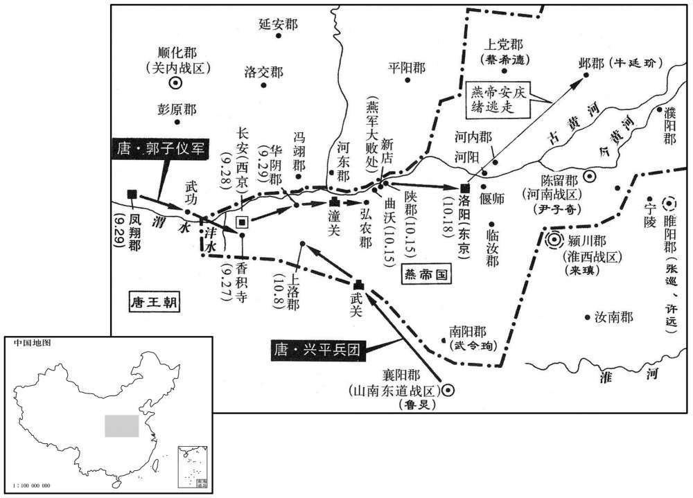
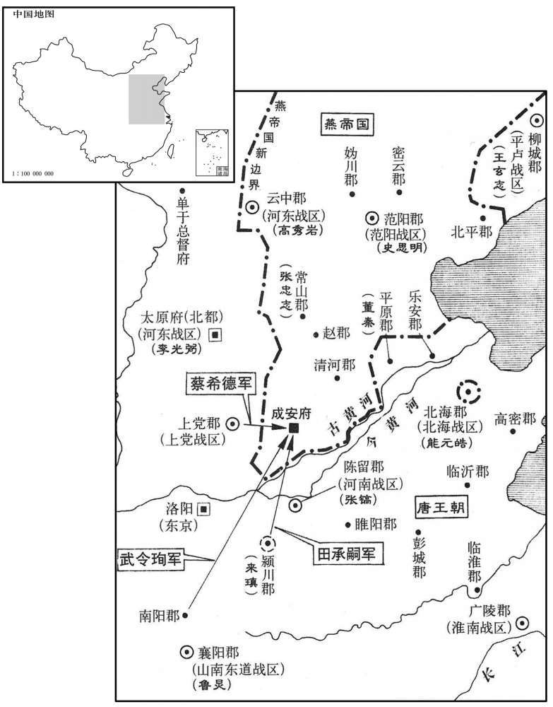
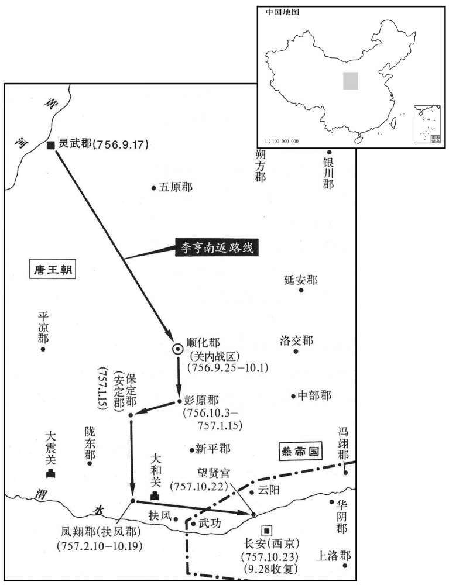
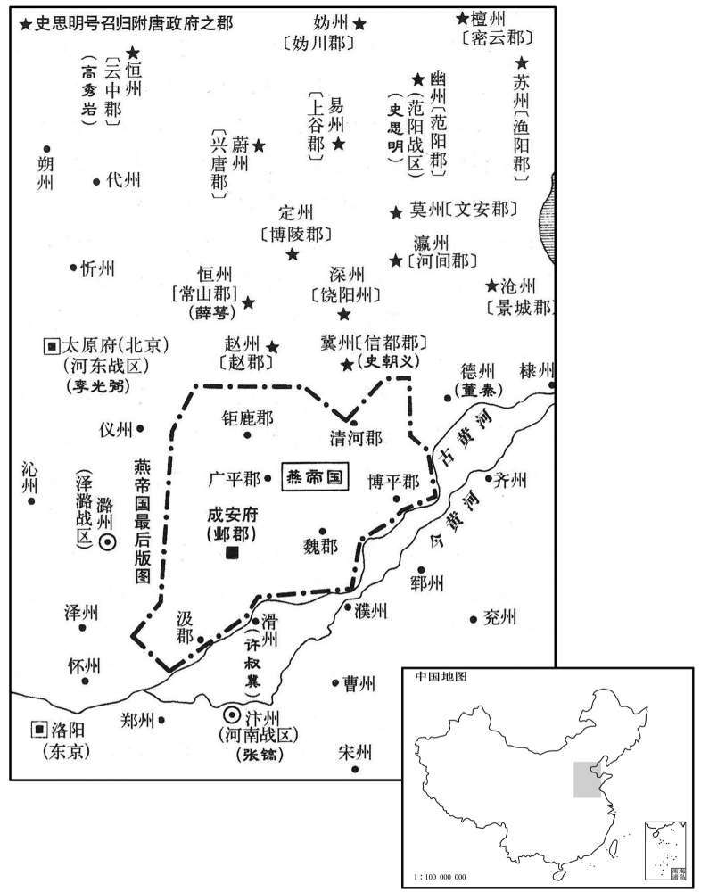
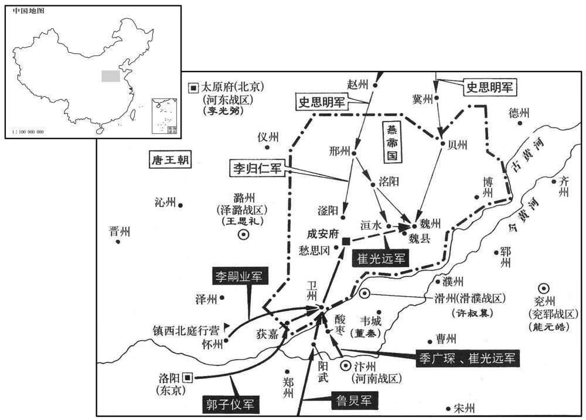

卷次与人物目录 / 卷220
资治通鉴 · 卷第二百二十【唐纪三十六】
公元757年至公元758年 · 原文、白话与胡三省注
本页按胡注本编排保存全卷内容。白话采用本站所据译本，未可靠对应的内容另列说明；事件标题用于定位，并非原书文字。
本卷共105段原文，100段有译文对应，5段缺译或待核对。
卷第二百二十【唐纪三十六】起强圉作噩（丁酉）九月，尽着雍淹茂（戊戌），凡一年有奇。
卷首原文与注释
肃宗文明武德大圣大宣孝皇帝中之下
公元757年 · 唐肃宗文明武德大圣大宣孝皇帝至德二年
至德二年〔（丁酉、七五七）〕
上传原文的注释括号有异常，字符原样保留；无法可靠划分的段落默认全文显示。
本年记事分属相邻卷，按原书顺序分别保留：第219卷 · 第220卷。
本年事件索引（现代整理）
- 蔡希德擒获王思礼并囚禁洛阳
- 回纥援军抵凤翔助唐收复两京
- 唐军与回纥联军香积寺大破叛军
- 仆固怀恩请追敌，广平王命其暂缓
- 广平王劝止回纥入城掳掠
- 长安收复捷报传至凤翔
- 肃宗召李泌商议迎回上皇
- 李泌以五不可请求归隐
- 李泌为建宁王李倓辩冤
- 李泌引武后杀子旧事劝肃宗慎防谗言
- 郭子仪追击叛军并收复潼关、华阴
- 啖庭瑶抵达蜀郡
- 兴平军击败叛军收复上洛
- 吐蕃攻陷西平郡
- 睢阳粮尽，张巡、许远杀妾奴救军
- 睢阳陷落，张巡、南霁云等被杀
- 李翰为张巡作传申辩
- 张镐赶至睢阳已陷并杖杀闾丘晓
- 回纥协助唐军新店大败叛军
- 安庆绪弃洛阳逃往河北
- 广平王收复东京并以财帛安抚回纥
- 肃宗得知上皇愿意东归
- 李泌获准归隐衡山
- 肃宗自凤翔启程回长安
- 唐军收复河阳、河内并招降田承嗣
- 肃宗入长安，京城百姓夹道迎接
- 安庆绪退守邺郡重整兵马
- 陈希烈等降贼官员受审
- 甄济拒绝为安禄山效力
- 回纥叶护返程，肃宗厚赐遣行
- 肃宗称郭子仪再造国家
- 张镐率军收复河南、河东郡县
- 回纥叶护受封忠义王
- 严庄任司农卿
- 肃宗以栗木重制九庙神主
- 玄宗与肃宗于凤翔相见并同返长安
- 李岘主审陈希烈等案而获美誉
- 肃宗大赦并追赠平叛死节者
- 李翰作传为张巡食人守城辩护
- 上皇将传国宝授予肃宗
- 安庆绪败退后史思明收降其溃兵
- 耿仁智、乌承玼劝史思明归唐
- 史思明囚禁承庆、守忠后率十三郡归降
- 史思明控制河北州郡并招降守将
- 玄宗加上皇尊号为光天文武大圣孝感皇帝
- 郭子仪回东都筹划收复河北
- 李岘力争宽处陷贼官员
- 上皇反对赦免张均、张垍
- 张万顷因保全百姓未被追罪
- 司马光批评朝廷厚待失节官员
- 废妃韦氏卒
- 唐廷设置左右神武军
- 唐廷调整河中、剑南等地节度区划
九月，丁丑，希德以轻骑至城下挑战，千里帅百骑开门突出，欲擒之；会救至，〔【章：十二行本「至」下有「千里」二字；乙十一行本同；孔本同；张校同。】〕收骑退还，桥坏，坠堑中，反为希德所擒。〔为将者，不可恃勇轻脱。程千里欲擒蔡希德，反为希德所擒，恃勇轻脱之祸也。骑，奇寄翻。挑，徒了翻。帅，读曰率。〕仰谓从骑曰：「吾不幸至此，天也！归语诸将，〔从，才用翻。语，牛倨翻。〕善为守备，宁失帅，不可失城。」帅，所类翻。〕希德攻城，竟不克，送千里于洛阳，安庆绪以为特进，囚之客省。
九月丁丑（初二），判军大将蔡希德率领轻装骑兵来到上党城下挑战，节度使程千里率领一百名骑兵开城门突然杀出，想要活捉蔡希德，这时叛军救兵来到，程千里只好收兵退回，因为城门口的过桥被毁坏，程千里坠入城壕之中，反被蔡希德俘虏。程千里仰天长叹对随从的骑兵说：“我不幸被叛军俘虏，这是天意！回到城里后请告诉诸位将领，让他们好好坚守，宁可失去将帅，不能够失去城池。”蔡希德又领兵攻城，没有攻克，于是把程千里送往洛阳，安庆绪任命程千里为特进，囚禁于客省。
郭子仪以回纥兵精，劝上益征其兵以击贼。怀仁可汗遗其子叶护及将军帝德等将精兵四千余人来至凤翔；上引见叶护，宴劳赐赉，惟其所欲。〔见，贤遍翻。劳，力到翻。〕丁亥，元帅广平王俶朔方等军及回纥、西域之众十五万，号二十万，发凤翔。俶见叶护，约为兄弟，叶护大喜，谓俶为兄。回纥至扶风，郭子仪留宴三日。叶护曰：「国家有急，远来相助，何以食为！」宴毕，既行。日给其军羊二百口，牛二十头，米四十斛。
郭子仪认为回纥兵精，能征善战，就劝肃宗多征回纥兵以平叛。回纥怀仁可汗派他的儿子叶护和将军帝德等率领精兵四千余人来到凤翔，肃宗接见叶护，设宴招待，赏赐财物，随其所愿，无不满足。丁亥（十二日），元帅广平王李率领朔方等各镇兵及回纥、西域各国兵共十五万，号称二十万，从凤翔出发。李见到回纥叶护，二人约为兄弟，叶护十分高兴，称李为兄。回纥人到达扶风，郭子仪留他们宴请三天。叶护说：“国家在危难之中，我们远来援助，还没有作战，那里顾得上大吃大喝！”宴会后便立即出发。唐朝每天供给回纥军羊二百头，牛二十头，米四十斛。
庚子，诸军俱发；壬寅，至长安西，陈于香积寺北澧水之东。〔此皆汉上林苑地也。地说云：丰水，出鄠南丰谷，北流径汉龙台观东南，与渭水会于短阴山。程大昌曰：香积寺，吕图在子午谷正北微西。郭子仪收长安，陈于寺北，距澧水，临大川。大川者，沈水、交水，唐永安渠也。盖寺在澧水之东，交水之西也。吕图云在镐水发源之北，则近昆明池矣。子仪先败于清渠，至此则循南山出都城后，据地势以待之也。陈，读曰阵；下陈于、其东、于陈、陈乃、贼陈同。〕李嗣业为前军，郭子仪为中军，王思礼为后军。贼众十万陈于其北，李归仁出挑战，官军逐之，逼于其陈；贼军齐进，官军却，为贼所乘，军中惊乱，贼争趣辎重。〔重，直用翻。〕李嗣业曰：「今日不以身饵贼，军无孑遗矣。」乃肉袒、执长刀，立于陈前，大呼奋击，〔呼，火故翻〕。当其刀者，人马俱碎，杀数十人，陈乃稍定。于是嗣业帅前军各执长刀，如墙而进，身先士卒，〔先，悉荐翻。〕所向摧靡。都知兵马使不难得救其裨将，〔王难得为凤翔都知兵马使，时上在凤翔，盖御营大将也。〕贼射之中眉，皮垂鄣目。难得自拔箭，掣去其皮，血流被面，〔射，而亦翻。中，竹仲翻。掣，昌列翻。去，羌吕翻。被面，〔射，而亦翻。竹仲翻。掣，昌列翻。去，羌吕翻。被，皮义翻。〕前战不已。贼伏精骑于陈东，欲袭官军之后，侦者知之，〔骑，奇寄翻。侦，丑郑翻。〕朔方左厢兵马使仆固怀恩引回纥就击之，翦灭殆尽，贼由是气索。〔索，昔各翻，尽也。〕李嗣业又与回纥出贼陈后，与大军夹击，自午及酉，斩首六万级，填沟堑死者甚众，贼遂大溃。余众走入城，造夜，嚣声不止。堑，七艳翻。嚣，五羔翻。
庚子（二十五日），各路大军同时出发，壬寅（二十七日），到达长安城西，在香积寺北面沣水东岸结成阵列。李嗣业为前军，郭子仪为中军，王思礼为后军。叛军十万在北面列阵，叛将李归仁出阵挑战，官军追击，逼近叛军阵中，叛军一齐进发，官军退却，叛军乘机突进，官军十分吃惊，顿时大乱，叛军争着抢夺军用物资。这时李嗣业说；“今天如果不拚死抵抗，官军就会彻底灭亡。”于是就袒露上身，手执长刀，立于阵前，大声呼喊，奋勇杀敌，叛军遇到他的刀锋，人马纷纷落地，接连杀死数十人，才稳住了官军的阵地。然后李嗣业率领前军各持长刀，排成横队，如墙向前推进，自己身先士卒，叛军纷纷后退，官军所向披靡。都知兵马使王难得为了救他的裨将，被叛军射中眼眉，垂下的肉皮遮住了眼睛。王难得自己拔去箭头，扯掉肉皮，血流满面，但仍然奋勇作战，不下战场。叛军埋伏精兵于阵地东面，想要从后面袭击官军，被官军侦察发觉，朔方左厢兵马使仆固怀恩领回纥兵袭击叛军伏兵，叛军被全部消灭，因而士气大落。李嗣业又与回纥兵绕道至叛军阵后，与大军前后夹击，从午时至酉时，共杀敌六万余人，被填于沟堑中的死者无数，叛军大败而溃退。其余的残兵逃入长安城中，夜晚喧叫声不止。
仆固怀恩言于广平王俶曰：「贼弃城走矣，请以二百骑追之，缚取安守忠、李归仁等。」〔俶，昌六翻。骑，奇寄翻。〕俶曰：「将军战亦疲矣，且休息，俟明旦图之。」怀恩曰：「归仁、守忠，贼之骁将，骤胜而败，此天赐我也，奈何纵之！使复得众，〔骁，坚尧翻。复，扶又翻；下而复、可复、复修、复为、敢复同。〕还为我患，悔之无及！战尚神速，何明旦也！」〔言何用俟明旦。〕俶固止之，使还营。〔还，从宣翻，又音如字。〕怀恩固请，往而复反，一夕四五起。迟明，谍至，〔迟，直二翻。谍，达謟翻。〕守忠、归仁与，张通儒、田干真皆已遁矣。〔广平王若用仆固怀恩之言，固不假新店之战，可以径取东京矣。〕癸卯，大军入西京。
仆固怀恩对广平王李说：“叛军要放弃长安城逃走，请让我率领二百名骑兵追击，捉住安守忠、李归仁等人。”李说：“将军作战已经很疲劳了，暂且休息，等到明天再作计议。”仆固怀恩说：“李归仁与安守忠都是叛军中骁勇善战的大将，现在骤然被我们打败，实在是天赐良机，为何要放虎归山呢！如果让他们收拾残兵，再来与我们作战，那时后悔就来不及了！再说兵贵神速，为何要等到明天呢！”但广平王李坚持不同意，让仆固怀恩返回营中。仆固怀恩坚请不已，来来回回，一夜达四五次。等到天亮，侦察人员回来，报告说叛军守将安守忠、李归仁与张通儒、田乾真等都已逃跑。癸卯（二十八日），唐朝大军进入西京。
初，上欲速得京师，与回纥约曰：「克城之日，土地、士庶归唐，金帛、子女皆归回纥。」至是，叶护欲如约。广平王俶拜于叶护马前曰：「今始得西京，若遽俘掠，则东京之人皆为贼固守，〔纥，下没翻。为，于伪翻；下当为同。〕不可复取矣，愿至东京乃如约。」叶护惊跃下马答拜，跪捧王足，〔夷礼以拜跪捧足为敬。〕曰：「当为殿下径往东京。」即与仆固怀因引回纥、西域之兵自城南过，营于浐水之东。〔过京城南，历安化门、启夏门外，遶京城东南角，转北，历延兴、春明、通化三门之外，至浐水，出蓝田县境之西，北行过白鹿原西，又北入于霸水，浐，音产。〕百姓、军士、胡虏见俶拜，皆泣曰：「广平王真华、夷之主！」上闻之喜曰：「朕不及也！」俶整众入城，百姓老幼夹道欢呼悲泣。俶留长安，镇抚三日，引大军东出。〔东出京城门，取洛阳。俶，昌六翻。〕以太子少傅虢王巨为西京留守。〔少，始照翻。守，式又翻。〕
起初，肃宗急于收复京师，与回纥相约定：“收复了京城之日，土地与男子归唐朝所有，金帛与女人全部归于回纥。”这时，回纥叶护要按约定办事。广平王李拜于回纥叶护马前说：“现在刚克复了西京，如果大肆进行抢掠，那么在东京的人就会为叛军死守，难以再攻取，希望到东京后再履行约定。”回纥叶护吃惊地跳下马回拜，并跪下来捧着广平王的脚，说：“我当率军为殿下立刻前往东京。”于是与仆固怀恩率领回纥、西域的军队从长安城南经过，扎营于水东岸。百姓、军士以及胡人见到广平王李纷纷下拜，都哭泣着说：“广平王真不愧汉夷各族的主人！”肃宗得知后高兴地说：“朕不如广平王！”于是广平王李整军入京城，城中百姓不分男女老幼，都夹道欢呼悲泣。李留在长安，镇守安抚了三天后，率领大军向东去收复洛阳。任命太子少傅虢王李巨为西京留守。
甲辰，捷书至凤翔，百寮入贺。上涕泗交颐，即日，遗中使啖庭瑶入蜀奏上皇；〔使；疏吏翻。啖，徒敢翻，姓也。〕命左仆射裴冕入京师，告郊庙及宣慰百姓。
甲辰（二十九日），报捷的文书到达凤翔，百官都入宫祝贺。肃宗泪流满面，当天即派宦官啖庭瑶入蜀中上奏玄宗，又命令左仆射裴冕先入京师，告慰祖宗陵庙并安抚百姓。
上以骏马召李泌于长安。〔射，寅谢翻。泌，毗必翻。李泌时从军在长安。〕即至，上曰：「朕已表请上皇东归，朕当还东宫复修臣子之职。」泌曰：「表可追乎﹖」上曰：「已远矣。」泌曰：「上皇不来矣。」上惊，问故。泌曰：「理势自然。」上曰：「为之奈何﹖」泌曰：「今请更为群臣贺表，言自马嵬请留，灵武劝进，〔更，古孟翻。嵬五回翻。请留、劝进事并见二百十八卷至德元载。〕及今成功，圣上思恋振昏，请速还京以就孝养之意，则可矣。」〔养，羊尚翻。〕上即使泌草表。上读之，泣曰：「朕始以至诚愿归万机。今闻先生之言，乃寤其失。」立命中使奉表入蜀，因就泌饮酒，同榻而寝。而李辅国请取契钥付泌，泌请使请辅国掌之；上许之。〔泌掌契钥，见二百十八卷上年九月。今付辅国，宫禁之权尽归之矣。为辅国专擅张本。〕
肃宗派人用骏马召李泌于长安。李泌到后，肃宗说：“朕已经上表请求上皇回京城，朕当让帝位，还东宫重为太子。”李泌说：“上表还能够追回吗？”肃宗说：“已经走远了。”李泌说：“上皇不会回来。”肃宗吃惊地问什么原因。李泌说：“按道理和情势，不回来是自然的。”肃宗说：“那怎么办呢？”李泌说：“现在请再写一份群臣贺表，就说自从在马嵬被留，在灵武被劝说即帝位，到今天克复京城，陛下时刻思念着上皇，请上皇立刻返回京城，以使陛下能尽孝养之心，这样就可以了。”肃宗听后立刻让李泌草写表书。肃宗读了表书后，泣不成声地说：“朕开始时真心想把帝位复归上皇。现在听了先生的话，才知道是失策。”于是立刻命令宦官奉表书入蜀，然后与李泌一起饮酒，并同床而睡。而李辅国请求把宫禁中的符契与钥匙交付给李泌，李泌请求让李辅国掌管，肃宗同意。
泌曰：「臣今报德足矣，复为闲人，何乐如之！」上曰：「朕与先生累年同忧患，今方相同娱乐，〔乐，音洛。〕奈何遽欲去乎！」泌曰：「臣有五不可留，愿陛下听臣去，免臣于死。」上曰：「何谓也﹖」对曰：「臣遇陛下太早，陛下任臣太重，宠臣太深，臣功太高，迹太奇，此其所以不可留也。」上曰：「且眠矣，异日议之。」对曰：「陛下今就臣榻卧，犹不得请，况异日香案之前乎！〔唐制：凡朝日，殿上设黼扆、蹑席、熏炉、香案，皇帝升御座，宰执当香案前奏事。〕陛下不听臣去，是杀臣也。」上曰：「不意卿疑朕如此，岂有如朕而办杀卿邪！是直以朕为句践也！」〔邪，音耶。范蠡即与越王句践报吴之耻，蠡乃扁舟五湖，遗大夫文种书，以为句践长颈鸟喙，可与同患难，不可与同安乐。文种见书，遂称疾。句践赐文种死。音钩。〕对曰：「陛下不办杀臣，故臣求归；若其即办，臣安敢复言！〔复，扶又翻。〕且杀臣者，非陛下也，乃『五不可』也。陛下向日待臣如此，臣于事犹有不敢言者，况天下即安，臣敢言乎！」
李泌说：“我现在已经报答了陛下的知遇之恩，想要重新做隐士，那将是多么快乐！”肃宗说：“朕与先生多少年来共经患难，现在正到了同亨欢乐的时候了，为何想要立刻离开我呢！”李泌说：“我有五条理由不能够留下来，希望陛下能够答应我离去，使我免于一死。”肃宗说：“这是什么意思？”李泌回答说：“我与陛下相遇太早，陛下任用我太重，宠爱我太深，我的功劳太高，事迹太奇，这就是我不能够留在朝中的原因。”肃宗说：“现在先睡觉吧，以后再说这件事。”李泌说：“陛下现在与我同床而睡，我请求的事都不答应，何况以后在朝廷的殿上！还能够有所请求吗？陛下不答应我离开朝廷，实际上是在杀死我。”肃宗说：“没有想到你对朕如此疑心，朕怎么能够杀你呢！你真是把朕当做春秋时期的越王勾践了！”李泌回答说：“正因为陛下不杀掉我，所以我才要求离去归隐；如果要杀掉我，我还怎么敢说离去的事呢！再说要杀掉我的并不是陛下，而是我所说的不能够留下来的五条理由。陛下过去待我如此之好，我有时遇事还不敢尽言，何况现在天下已经安定，我还敢直言吗！”
上良久曰：「卿以朕不从卿北伐之谋乎！」〔谓不从使建宁王自妫、檀取范阳之策也。肃宗以意言之。〕对曰：「非也，所不敢言者，乃建宁耳。」上曰：「建宁，朕之爱子，性英果，艰难时有功，〔谓马嵬劝留，及北赴灵武，血战以卫上也。事见二百十八卷元载六月。〕朕岂不知之！但因此为小人所教，欲害其兄，图继嗣，朕以社稷大计，不得已而除之，〔事见上卷本年正月。嗣，祥吏翻。〕卿不细知其故邪﹖」对曰：「若有此心，广平当怨之。广平每与臣言其冤，辄流涕呜咽。臣今必辞陛下去，始敢言之耳。」上曰：「渠尝夜扪广平，意欲加害。」对曰：「此皆出谗人之口，岂有建宁之孝友聪明，肯为此乎！且陛下昔欲用建宁为元帅，臣请用广平。〔事见二百十八卷元载九月。帅，所类翻。〕建宁若有此心，当深憾于臣；而以臣为忠，益相亲善，陛下以此可察其心矣。」上乃泣下曰：「先生言是也。即往不咎，〔引论语孔子之言。〕朕不欲闻之。」
肃宗想了一会说：“你是因为朕没有听从你关于北伐的计谋吗！”李泌回答说：“不是关于北伐的事，我所不敢直言的是关于建宁王李的事。”肃宗说：“建宁王李是朕的爱子，性格英勇果断，在艰难之际立了大功；朕怎么能不知道呢！但他受到小人的教唆，想要谋害他的哥哥广平王李，图谋为太子，朕从国家的利益考虑，不得已才除掉了他，你难道不知道这一原因吗？”李泌回答说：“建宁王如果有谋害太子的心意，广平王应该怨恨他。但广平王每当与我言及此事，涕泣呜咽，称建宁王冤枉。我现在决计辞陛下而去，所以才敢于说这件事。”肃宗说：“建宁王曾经在夜晚摸广平王的门，是想要害死广平王。”李泌说：“这都是坏人进的谗言，建宁王孝友聪明，怎么肯做这样的事呢！再说陛下过去想要任用建宁王为元帅，我请求任用广平王。建宁王如果有谋害广平王而自己当太子的野心，应当深深地恨我，而他却认为我忠心，与我更加亲密友善，陛下通过此事就可看出建宁王的心意。”肃宗听完后哭泣着说：“先生所说的话都非常正确。既往不咎，我不想再听说这件事了。”
泌曰：「臣所以言之者，非咎即往，乃欲使陛下慎将来耳。昔天后有四子，长曰太子弘，天后方图称制，〔恶其聪明，酖杀之，〔见二百二卷高宗上元二年。〕立次子雍王贤。贤内忧惧，作黄台瓜辞，冀以感悟天后。天后不听，贤卒死于黔中。〔贤废见二百二卷永隆元年；死见二百三卷武后光宅元年。卒，子恤翻。黔，音禽。〕其辞曰：『种瓜黄台下，瓜熟子离离：一摘使瓜好，再摘使瓜稀，三摘犹为可，四摘抱蔓归！』今陛下已一摘矣，慎无再摘！」上愕然曰：「安有是哉！卿录是辞，朕当书绅。」对曰：「陛下但识之于心，〔识，职吏翻，记也。〕何必形于外也！」是时广平王有大功，良娣忌之，潜构流言，故泌言及之。〔【章：十二行本「之」下有「泌复固请归山，上曰俟将发此议之」十四字；乙十一行本同；退斋校同；张校同，云无注本亦无。李泌历事肃、代、德三朝，皆能言人所难言，奇士也。〕
本段缺少可靠对应白话，原文完整保留；未使用生成译文。
郭子仪引蕃、汉兵追贼至潼关，斩首五十级，克华阴、弘农二郡。关东献俘百余人，敕皆斩之；监察御史李勉言于上曰：「今元恶未除，为贼所污者半天下，〔污，乌故翻。〕闻陛下龙兴，咸思洗心以承圣化，今悉诛之，是驱之使从贼也。」上遽使赦之。
郭子仪率领蕃、汉兵追击叛军至潼关，杀敌五千人，攻克了华阴、弘农二郡。关东向朝廷献来俘虏一百余人，肃宗下敕书让把他们全部杀掉，这时监察御史李勉向肃宗进言说：“现在举行叛乱的元凶还没有被除掉，战乱波及了大半个国家，许多人都受到了牵连，他们得知陛下即皇帝位，率兵平叛，都想着洗心革面，来服从陛下，现在如果把这些被俘的人全部杀掉，是逼迫那些跟随反叛的人继续作乱。”肃宗听后立即命令赦免了他们。

冬，十月，丁未，谈〔【章：十二行本「谈」作「啖」；乙十一行本同；孔本同。】〕庭瑶至蜀。
冬季，十月丁未（初三），啖庭瑶到达蜀郡。
壬子，兴平军奏：破贼于武关，克上洛郡。〔时王难得领兴平军〕
壬子（初八），兴平军上奏说：在武关打败叛军，收复了上洛郡。
吐蕃陷西平。〔西平郡，鄯州。〕
吐蕃军队攻陷西平郡。
尹子奇久围睢阳，城中食尽，议弃城东走，张巡、许远谋，以为：「睢阳，江、淮之保障，若弃之去，贼必乘胜长驱，是无江、淮也。〔考异曰：唐人皆以全江、淮为巡、远功。按睢阳虽当江、淮之路，城既被围，贼若欲取江、淮、绕出其外，睢阳岂能障之哉！盖巡善用兵，贼畏巡为后患，不灭巡则不敢越过其南耳。〕且我众饥赢，走必不达。古者战国诸侯，尚相救恤，〔谓春秋列国，同盟有急则相救恤也。〕况密迩群帅乎！〔群帅，谓张镐、尚衡、许叔冀等。帅，所类翻。〕不如坚守以待之。」茶纸既尽，遂食马；马尽，罗雀掘鼠；雀鼠又尽，巡出爱妾，杀以食士，〔食，祥吏翻。〕远亦杀其奴；然后括城中妇人食之，〔【章：十二行本「之」下有「既尽」二字；乙十一行本同；孔本同；退斋校同。】〕继以男子老弱。人知必死，莫有叛者，所余纔四百人。
叛军将领尹子奇率兵久围睢阳，城中粮食已经吃尽，有人建议放弃睢阳把军队撤向东面，张巡与许远商议，认为：“睢阳是江、淮地区的屏障，如果放弃睢阳城，那么叛军就可以长驱南下，侵占江、淮地区。再说我们的将士都因饥饿劳累病弱，要撤退也必定走不脱。战国时代的各国诸侯交战时，同盟国还互相救援，何况我们周围不远还有许多朝廷的驻军将帅！不如固守以待援。”茶纸吃完以后，就杀马而食；马被杀完后，又捕鸟雀和掘地抓鼠而食；鸟鼠又吃尽后，张巡就杀掉自己的爱妾，让士卒们吃肉，许远也杀了他的家奴；然后把城中的女人全部搜寻出来杀死后吃掉，接着又杀了老弱病残的男子。城中的人都知道必死，所以没有叛变的，最后剩下的只有四百人。
癸丑，贼登城，将士病，不能战。巡西向再拜日：「臣力竭矣，不能全成，生既无以报陛下，死当为厉鬼以杀贼！」〔鬼无所归者为厉。〕城遂陷，巡，远俱被执。尹子奇问巡曰：「闻君每战皆裂齿碎，何也﹖」〔皆，疾智翻，又才诣也。〕巡曰：「吾志吞逆贼，但力不能耳。」子奇以刀抉其口视之，〔抉，一决翻。〕所余纔三四。子奇义其所为，欲活之。其徒日：「彼守节者也，终不为用。且得士心，存之，将为后患。」乃并南霁云、雷万春等三十六人皆斩之。〔考异日：新传曰：「虢王巨之走临淮，巡有妹嫁陆氏，遮巨劝勿行；不纳。赐百缣，弗受。为巡补缝行间，军中号陆家姑。先巡被害。」按巨在彭城，若走临淮，陆姊在睢阳城，何以得遮之！今不取。〕颜色不乱，扬扬如常。生致许远于洛阳。
癸丑（初九），叛军登上城头，将士们因为病弱，不能再战。张巡向西拜了两拜说：“我已经竭尽全力，但没有守住睢阳城，生时既然不能报答陛下的恩德，死后作为没有归宿的鬼魂也要英勇杀敌！”随后城被叛军攻陷，张巡与许远都作了俘虏。尹子奇问张巡说：“听说将军你每当作战时眼角睁裂，牙齿咬碎，不知道这是为什么？”张巡说：“我是坚决想要吞掉你们这伙叛逆的贼党，但恨力不从心。”尹子奇就用刀撬开张巡的口探视，只剩下三四颗牙齿。尹子奇十分欣赏张巡的忠义，不想杀掉他。但他的部下却说：“像张巡这样的人，都是忠义守节之士，终究不会为我们所用。再说他深得军心，如果不杀掉他，必会后患。”于是尹子奇就把张巡与南霁云、雷万春等三十六人全部杀掉。张巡临刑前，神色自若，面不改色，慷慨赴难。尹子奇把许远送往洛阳。
巡初守睢阳时，卒仅万人，城中居人亦且数万，巡一见问姓名，其后无不识者。前后大小战凡四百余，杀贼卒十二万人、巡行兵不依古法，教战陈，令本将各以其意教之。〔本将，谓本部之将。陈，读曰阵。人或问其故，巡曰：「今与胡虏战，云合鸟散，变态不恒，数步之间，势有同异。临机应猝，在于呼吸之间，而动询大将，事不相及，非知兵之变者也。故吾使兵识将意，将识士情，投之而往，如手之使指。兵将相习，人自为战，不亦可乎！」自兴兵，器械、甲仗皆取之于敌，未尝自修。每战，将士或退散，巡立于战所，谓将士曰：「我不离此，〔离，力智翻。〕汝为我还决之。」将士莫敢不还，死战，卒破敌。〔为伪翻。卒，子恤翻。又惟诚待人，无所疑隐；临敌应变，出奇无穷；号令明，赏罚信，与众共甘苦寒暑，故下争致死力。
张巡起初坚守睢阳时，仅有士兵一万人，而城中居民百姓却有数万人，张巡每见一人就询问其姓名，以后没有不认识的。前后大小战斗共进行了四百多次，杀死叛军十二万人。张巡练兵不按照古人的兵法作战布阵，而是命令部下的将领各自按照自己的战略教习战法。有人问其中的原因，张巡说：“现在是与反叛的胡人作战，他们忽散忽合，变化不定，有时在数步之内，军势都不同。所以就需要将领们在很短的时间内能够应接突发的事件，如果让他们动不动就要请示大将，那就来不及了，这是不知道作战用兵的变化。所以我让士卒了解将领的心意，将领熟悉士卒的情绪，这样将领指挥士卒作战，就如手使用自己的指头一样自如。兵与将都相互了解，部队各自为战，不是很好吗！”自从与叛军交战以来，守城所用的器械与作战所用的兵器都是缴获敌人的，守城部队没有修理制造过。每当战斗激烈时，有的将士后退下来，张巡就立在阵地上对将士们说：“我绝不离开这里，你们为我返回去继续与叛军决战。”将士听后，没有敢再后退的，又纷纷向前，与叛军死战，最后都能够打退敌人的进攻。张巡待人诚恳，胸怀坦荡，善于随机应变，出奇制胜。并且号令严明，赏罚分明，能够与部下同甘共苦，所以部下的将士都拚死效力。
张镐闻睢阳围急，倍道亟进，〔张镐代贺兰进明，见上卷八月。〕檄浙东、浙西、淮南、北海诸节度〔按新书方镇表，浙东、浙西明年方置节度使。时崔涣在浙东，李希言在浙西，皆非节度使。淮南则李成式，北海尚为贼将能元皓所据。然去年已置北海节度使，是虽未复北海而已置北海帅矣。〕及谯郡太守闾丘晓，使共救之。晓素傲很，不受镐命。比镐至，〔比，必利翻，及也。〕睢阳城已陷三日。镐召晓，杖杀之。〔者异曰：旧传作「豪州剌史」，新传作「濠州剌史」，统纪作「毫州剌史」。按濠州在淮南，去睢阳远。毫州与睢阳接境，必毫州也。今从统纪。余按通鉴改统纪之毫州为谯郡，以此时未复郡为州也。读者粃知之。
本段缺少可靠对应白话，原文完整保留；未使用生成译文。
张通儒等收余众走保陕，〔自长安东走保陕。〕安庆绪悉发洛阳兵，使其御史大夫严庄将之，就通儒以拒官军，并旧兵步骑犹十五万。〔旧兵，谓张通儒等所领自西京东走之兵。〕己未，广平王至曲沃。〔此非春秋晋庄叔所封之曲沃，按其地在弘农、灵宝二县之间。水经注：弘农县东十三里有好阳亭，又东有曲沃城。〕回纥叶护使其将军鼻施吐拨裴罗等引军旁南山搜伏，因驻军领北。〔旁，步浪翻。〕郭子仪等与贼遇于新店，〔据旧书，新店在陕城西。〕贼依山而陈，子仪等初与之战，不利，贼逐之下山。回纥自南山袭其背，于黄埃中发十余矢。贼惊顾曰：「回纥至矣！」遂溃。官军与回纥夹击之，贼大败，僵尸蔽野。严庄、张通儒等弃陕东走，广平王俶、郭子仪入陕城，仆固怀恩等分道追之。
叛军大将张通儒等收罗残兵退保陕郡，安庆绪调集了洛阳的全部兵力，命令他的御史大夫严庄率领，与张通儒合兵，共有步、骑兵十五万，来阻挡官军。己未（十五日），广平王李率兵到达曲沃。回纥叶护命令其部将鼻施吐拨裴罗等率兵顺着南山搜寻叛军，于是驻军于岭北。郭子仪等人率兵与叛军相遇于新店，叛军依山而布阵，郭子仪初战不利，被叛军赶到山下。这时回纥军从南山袭击叛军的背面，在漫天黄尘中射了十余箭。叛军回头一看，吃惊地说：“回纥兵来了！”于是溃败。官军与回纥军乘机前后夹击，叛军被打得大败，尸横遍野。严庄与张通儒等人放弃陕郡向东败逃，广平王李与郭子仪进入陕城，仆固怀恩率兵分头追击叛军。
严庄先入洛阳告安庆绪。庚申夜，庆绪帅其党自苑门出，〔东部苑门也。〕走河北；〔考异曰：「实录无新店战日，但云：「子仪与嗣业等至新店，遇贼，大破之，逐北五十余里，人马相枕藉，器械、戈甲自陕至洛城委弃道路无空地。庚申，庆绪走，其夜，自东都苑门帅其众党奔河北。壬戌，元帅广平王与子仪收陕郡。」汾阳家传：「九月，安庆绪自洛疾使诸将至陕，兼收败卒，犹十五万。十月四日，于陕西依山而陈，彼则凭高下击，此乃进军上冲，贼屹立不动。公使伪退，引令下山，使回纥蓦涧走险以袭其背，贼乃败绩；斩九万级，擒一万人。」汾阳家传：「十月四日破贼于陕西，八日收洛阳。」年代记：「十月，己未，破贼于新店。辛酉，庆绪闻军败，率其党投相州。」旧纪：「庚申，庆绪奔河北。壬戌，广平王入东京。」新纪：「戊申，败贼新店，克陕郡。壬子，复东京。」按陕、洛之间，几三百里，汾阳传、新纪太早，实绿壬戌收陕郡太晚，今从年代记、幸蜀记。〕杀所获唐将哥舒翰、程千里等三十余人而去。许远死于偃师。〔考异曰：实录、旧传皆日：「尹子奇执辛洛阳，与哥舒翰、程千里俱囚于客省。及安庆绪败，渡河北走，使严庄皆害之。张中丞传：「相里造诛曰：『唐故御史中丞张、许二居，以守城睢阳陷，张君遇害，许君为羯贼所擒，求死不得，降逼至偃师县，亦被兵焉。』今从之。
本段缺少可靠对应白话，原文完整保留；未使用生成译文。
壬戌，广平王俶入东京。回纥意犹未厌，俶患之。父老请率罗锦万匹以赂回纥，回纥乃止。
壬戌（十八日），广平王李率兵进入东京。回纥军还不满足，李十分忧虑。东京父老百姓请求以一万匹丝织品贿赂回纥军，回纥军才罢休。
成都使还，〔此还者，啖庭瑶也。还，音旋。〕上皇诰日：「当与我剑南一道自奉，不复来矣。」〔复，扶又翻；下嗣复同。〕上忧惧，不知所为。〔【章：十二行本「为」下有「数日」二字；乙十一行本同；孔于同；张校同】〕后使者至，〔此奉群臣贺表中使继还也。〕言：「上皇初得上请归东宫表，彷徨不能食，欲不归；及群臣振至，乃大喜，命食作乐，不诰定行日。」〔定东行归京之日也。上召李泌告之曰：「皆卿力也！」
使者从成都回来，带回玄宗的诰命说：“只要给我剑南一道容身自保就足够了，不想再回长安。”肃宗十分忧愁，不知道怎么办才好。这时后来派去的使者回来说：“上皇先得到陛下请求归还皇位的表书后，游移不定，吃不下饭，不想归来。等到群臣所上的表书到后，才心中大喜，命准备饮食歌舞，并颁下诰命确定了动身的日期。”肃宗把李泌召来说：“这都是你的功劳！”
泌求归山不已，上固留之，不能得，乃听归衡山。〔衡山，在衡阳郡衡山县西三十里，南岳也。汉武旁以霍山为南岳，隋文旁以衡山为南岳。按泌传，泌愿隐衡山，诏听之。敕郡县为之筑室于山中，〔为，于伪翻。〕给三品料。
两版字句有差异，建议核对原文。
李沁屡次请求归隐山中，肃宗执意挽留，不得已，才允许他返回衡山。并下敕书命令郡县官为李泌在山中建造房屋，给三品官的俸料。
癸亥，上发凤翔，遣太子太师韦见素入蜀，奉迎上皇。
癸亥（十九日），肃宗从凤翔出发回京师，并派太子太师韦见素往蜀中去迎接玄宗。
乙丑，郭子仪遣左兵马使张用济、右武锋使浑释之将兵取河阳及河内；严庄来降。陈留人杀尹子奇，举郡降。田承嗣围来瑱于颍川，亦遣使来降；郭子仪应之缓，承嗣复叛，与武令珣皆走河北。〔走，音奏。考异曰：「旧鲁炅传云：「炅保南阳，贼使武令珣攻之。令珣死，又令田承嗣攻之。」下又云：「王师收两京，承嗣、令珣奔河北。」唐历：「庆绪据邺，武令珣自唐、邓至。」炅传云武令珣死，误也。〕制以填为河〔【章：十二行本「河」作「淮」；乙十一行本同；孔本同。】〕南节度使。
乙丑（二十一日），郭子仪派左兵马使张用济与右武锋使浑释之率兵攻占了河阳及河内二郡，叛军大将严庄投降。陈留人杀了叛将尹子奇，献郡来降。叛军将领田承嗣于颍川围攻来，这时也派使者来请求投降，因为郭子仪接应缓慢，田承嗣再度反叛，与叛将武令退保河北。肃宗下制书任命来为河南节度使。

丙寅，上至望贤宫，〔雍录：望贤官，在咸阳县东数里。〕得东京捷奏。丁卯，上入西京。百姓出国门奉迎，二十里不纪，舞跃呼万岁，有泣者。上入居大明官。〔高宗咸亨元年，改蓬莱官为大明官，既东内。〕御史中丞进器令百官受贼官爵者皆脱巾徒跣立于含元殿前，〔含元殿，东内前殿也，当丹凤门内。搏膺顿首请罪，环之以兵，〔环，音宦。〕使百官临视之。太庙为贼所焚，上素服向庙哭三日。是日，上皇发蜀郡。
丙寅（二十二日），肃宗到达咸阳望贤宫，收到了东京克复的捷报。丁卯（二十三日），肃宗进入西京。城中百姓出城门外二十里来迎接，一路不绝，拜舞跳跃，高呼万岁，还有人哭泣。肃宗入居大明宫。御史中丞崔器命令接受过安禄山叛军官爵的人都解下头巾赤脚立于含元殿前，让他们自己捶打自己的胸口，叩头谢罪，周围站立着持武器的士卒，并让百官在含元殿台上观看。因为太庙被叛军烧毁，肃宗身着白色的服装，向着太庙大哭三天。当天，玄宗从蜀郡出发。

安庆绪走保邺郡，改邺郡为安成〔【严：「安成」改「成安」。】〕府，改元天成；〔考异曰：唐历曰改元天和﹖蓟门纪乱曰改元至成，与实录年号不同。纪年、通谱两存之。今从实录。〕从骑不过三百，步卒不过千人，诸将可史那承庆等散投常山、赵郡、范阳。旬日间，蔡希德自上党，田承嗣自颍川，武令珣自南阳，各帅所部兵归之。又召募河北诸郡人，众至六万，军声复振。〔复，扶又翻。〕
安庆绪率领部下败退到邺郡，于是改邺郡为安成府，改年号为天成。这时跟随他的骑兵不过三百，步兵不过一千人，其他部将如阿史那承庆等都分别逃向常山、赵郡、范阳等地。十天之内，蔡希德从上党，田承嗣从颍川，武令从南阳，各自率领本部兵马投奔邺郡。安庆绪又在河北各郡招募人马，兵众达到六万，军队的声势又一次振作起来。
广平王俶之入东京也，百官受安禄山父子官者陈希烈等三百余人，皆素服悲泣请罪。俶以上旨释之，寻勒赴西京。己巳，崔器令诣朝堂请罪，〔此东内之朝堂也，在含元殿左右，左曰东朝堂，右曰西朝堂。朝，直遥翻。〕如西京百官之仪，然后收系大理、京兆狱。其府县所由，祇承人等受贼驱使追捕者，皆收系之。〔所由人，有所监典；祇承人，听指呼给使令而已。
两版字句有差异，建议核对原文。
广平王李进入东京后，百官中接受过安禄山与安庆绪父子官爵的陈希烈等三百余人，都穿着白色的衣服悲泣请罪，李按照肃宗的意旨，都释放了他们，不久又把他们押送往西京。己巳（二十五日），崔器命令他们到朝堂向肃宗请罪，如同在西京对待接受伪职的百官那样，然后把他们关进大理寺和京兆的狱中。府县中那些为叛军干过事的小官吏，被抓住后，也关进狱中。
初，汲郡甄济，有操行，隐居青岩山，〔五代志：汲郡隋兴县有苍岩县，唐时当省入汲县。甄，之人翻。操，七到翻。行，下孟翻。〕安禄山为采访使，奏掌书记。〔此天宝间事。〕济察禄山有异志，诈得风疾，舁归家。禄山反，使蔡希德引行刑者二人，封刀召之，济引首待刀；希德以实病白禄山。后安庆绪亦使人强舁至东京，〔强，其两翻。〕月余，会广平王俶平东京，济起，诣军门上谒。〔上，时掌翻。〕俶遣诣京师，上命馆之于三司，〔时命三司按受贼官爵者，因馆济于三司署舍，使受贼官爵者罗拜之。馆，音贯。〕令受贼官爵者列拜以愧其心，〔以愧受贼官爵者之心。〕以济为秘书郎。国子司业苏源明称病不受禄山官，上擢为考功郎中、知制诰。壬申，上御丹凤门，下制：「士庶受贼官禄，为贼用者，令三司条件闻奏；其因战被虏，或所居密近，因与贼往来者，皆听自首除罪；其子女为贼所污者，勿问。」〔东内端门曰丹凤门，楼曰丹凤楼。首，手又翻。污，乌故翻。〕
起初，汲郡人甄济，操行清高，隐居于青岩山，安禄山为河北采访使时，上奏任命甄济为掌书记。甄济觉察到安禄山有反叛的野心，就假称中风，让人抬回家中。安禄山率兵反叛后，让蔡希德带领两名刽子手，手持大刀去召甄济，甄济伸出头等待着杀掉他，于是蔡希德就认为甄济确实有病，回去报告了安禄山。后来安庆绪也派人强把甄济抬到东京，一个多月以后，广平王李率兵收复东京，甄济即起来到军中去谒见李。李让甄济前往京师，肃宗让甄济住在三司的馆舍中，命令接受过叛军官爵的人列队向他伏拜，让这些人愧悔，并任命甄济为秘书郎。国子司业苏源明假装有病，没有接受安禄山所委任的官爵，肃宗就提拔他为考功郎中、知制诰。壬申（二十八日），肃宗登临丹凤门，颁下制书说：“对于官吏和百姓中接受过安禄山叛军官爵、俸禄以及为叛军干过事的人，命御史台、中书、门下三司分别不同情况上奏。在战斗中被叛军俘虏的将士，或与叛军居住靠近，因而与其往来的人，一律允许自首而免其罪。家中有妇女被叛军污辱的，都不问罪。”
癸酉，回纥叶护自东京还，上命百官迎之于长乐驿，〔长乐驿，在浐东长乐陂。〕上与宴于宣政殿。〔自含元殿入宣政门为宣政殿，东内之中朝也。〕叶护奏以「军中马少，请留其兵于沙苑，〔沙苑，在冯翊渭曲。李吉甫郡国图：沙苑，一名沙阜，在同州冯翊县南十二里，东西八十里，南北三十里。余靖曰：唐沙苑监，今之同州。少，诗沼翻。自归取马，还为陛下扫除范阳余呩。」〔为，于伪翻。〕上赐而遣之。
两版字句有差异，建议核对原文。
癸酉（二十九日），回纥叶护从东京返回，肃宗命令百官于长乐驿迎接，然后在宣政殿设宴招待叶护。叶护上奏说：“因为军中缺少战马，请把军队留在沙苑，自己回国取马，然后为陛下扫除范阳叛军的残余。”肃宗重加赏赐，然后遣叶护回去。
十一月，广平王俶、郭子仪来自东京，上劳子仪曰：「吾之家国，由卿再造。」〔劳，力到翻。〕
十一月，广平王李与郭子仪从东京来到西京，肃宗慰劳郭子仪说：“我们李家的大唐王朝，是由你复兴的。”
张镐帅鲁炅、来瑱、吴王祗、李嗣业，李奂五节度徇河南、河东郡县，皆下之；惟能元皓据北海，高秀岩据大同未下。〔能，奴代翻，姓也。北海，属河南道；大同，属河东道。〕
河南节度、采访等使张镐率领鲁灵、来、吴王李祗、李嗣业与李奂等五节度使攻打河南、河东道的郡县，全部收复。只有叛将能元皓占据着北海，高秀岩占据着大同，还未克复。
己丑，以回纥叶护为司空、忠义王；岁遗回纥绢二万匹，〔遗，于季翻。〕使就朔方军受之。
己丑（十五日），唐朝任命回纥叶护为司空，封忠义王爵，并答应每年赠送回纥丝织品二万匹，让他们到朔方军受取。
以严庄为司农卿。
任命严庄为司农卿。
上之在彭原也，更以栗为九庙主；〔礼：虞，主用桑；练，主用栗。作栗主则埋桑主。上皇幸蜀，九庙之主委之贼手，故彭原更以栗为之。〕庚寅，朝享于长乐殿。〔长乐殿，考雍录及吕图皆无之。以下文上皇入大明宫，御含元殿见百官，次诣长乐殿谢九庙主，则是殿亦在大明宫中也。中明宫图有长乐门，则长乐殿盖在长乐门内。〕
肃宗在彭原的时候，改用栗木为九庙中的神主。庚寅（十六日），肃宗于长乐殿中祭祀九庙神主。
丙申，上皇至凤翔，从兵六百余人，〔从，才用翻。〕上皇命悉以甲兵，输郡库。上发精骑三千奉迎。十二月，丙午，上皇至咸阳，上备法驾迎于望贤宫。上皇在宫南楼，上释黄袍，着紫袍，望楼下马，趋进，拜舞于楼下。上皇降楼，抚上而泣，上捧上皇足，呜咽不自胜。上皇索黄袍，自为上着之，〔着，陟略翻。胜，音升。索，山客翻。为于伪翻。〕上伏地顿首固辞。上皇曰：「天数、人心皆归于汝，使朕得保养余齿，汝之孝也！」上不得已，受之。父老在仗外，欢呼且拜。上令开仗，〔车驾所在，卫士立仗。〕纵千余人入谒上皇，曰：「臣等今日复睹二圣相见，死无恨矣！」〔复，扶又翻。〕上皇不肯居正殿，〔此行宫正殿也。〕曰：「此天子之位也。」上固请，自扶上皇登殿。尚食进食，上品尝而荐之。〔品品必尝而后进。〕丁未，将发行宫，上亲为上皇习马而进之上皇。上皇〔【章：十二行本「上皇」二字不重；乙十一行本同；张校同；熊校同。】〕上马，上亲执鞚。行数步，〔为，于伪翻。鞚，苦贡翻。考异曰：幸蜀记云：「执辔鞚，出宫门，上皇令左右扶上马。」令从实录。〕上皇止之。上乘马前引，不敢当驰道。〔上皇谓左右曰：「吾为天子五十年，未为贵；今为天子父，乃贵耳！」左右皆呼万岁。〔玄宗失国得反，宜痛自刻责以谢天下，乃以为天子父之贵夸左右，是全无心肠矣。〕上皇自开远门入大明宫，〔开远门，长安城西面北来第一门。〕御含元殿慰抚百宫；乃诣长乐殿谢九庙主，恸哭久之；〔乐，音洛。〕即日，幸兴庆宫，遂居之。上累表请避位还东宫，上皇不许。
丙申（二十二日），玄宗到达凤翔，跟随护卫的士兵有六百多人，玄宗命令他们把兵器全部交到凤翔郡的武器库中。肃宗派精锐骑兵三千去迎接。十二月丙午（初三），玄宗到达咸阳，肃宗准备了皇帝所乘的车驾在望贤宫迎接玄宗。玄宗在望贤宫中的南楼上，肃宗脱下黄袍，身着紫袍，望着南楼下马，用小步快速前行，伏身拜于楼下。玄宗从楼上下来，抚摸肃宗而哭泣，肃宗手捧玄宗的双脚，呜咽不已。玄宗要来黄袍，亲自为肃宗穿上，肃宗伏地叩头，坚辞不敢接受。玄宗说：“天命与人心都已经归于你，你能够让我安度晚年，就是你的忠孝了！”肃宗推辞不过，只好接受了黄袍。这时被挡在仪仗外面的父老百姓们，都高声欢呼拜舞。肃宗命令士卒们开禁，让一千余人进宫谒见玄宗，他们说：“我们今天重又见到二位圣人相逢，就是死了也不感到遗憾！”玄宗不肯居住在宫中的正殿，说：“这是天子的住地。”肃宗坚请，并亲自扶玄宗上殿。尚食官进上食物时，肃宗都亲自品尝后再献上去让玄宗吃。丁未（初四），玄宗将要从行宫出发，肃宗亲自为玄宗练马然后进上。等玄宗上马后，肃宗亲自为玄宗牵马。行走了数步后，被玄宗制止。肃宗又乘马在前面引导，不敢在路中央驰马。玄宗对左右的人说：“我作了五十年天子，都没有感到高贵过；现在作了天子的父亲，才高贵了！”左右的人听后，都高呼万岁。玄宗一行从开远门进入大明宫，驾临含元殿，抚慰百官，然后到长乐殿中谢九庙神主，恸哭了很久。当天，玄宗前往兴庆宫，就居住在宫中。肃宗多次上表请求归帝位于玄宗，自己还东宫仍为太子，玄宗不答应。
辛亥，以礼部尚书李岘、兵部侍郎吕諲为详理使，〔因按狱，特置此官。〕与御史大夫崔器共按陈希烈等狱。岘以殿中侍御史李栖筠为详理判官，栖筠多务平恕，故人皆怨諲、器之刻深，而岘独得美誉。
辛亥（初八），肃宗任命礼部尚书李岘、兵部侍郎吕为详理使，与御史大夫崔器一起审迅处置投敌的陈希烈等人的案件。李岘又任命殿中侍御史李栖筠为详理判官，李栖筠多从宽处理，所以人们都怨恨吕与崔器的严酷，而只有李岘一人得到人们的称赞。
戊午，上御丹凤楼，赦天下，惟与安禄山同反及李林甫、王鉷、杨国忠子孙不在免例。立广平王俶为楚王，加郭子仪司徒，李光弼司空，〔鉷，户公翻。俶，昌六翻。考异曰：实录，光弼旧守司徒。按旧传，光弼检校司徒耳，实录误也。〕自余蜀郡、灵武扈从立功之臣，〔从，才用翻。〕皆进阶，赐爵，加食邑有差。李竏、卢奕、颜杲卿、袁履谦、许远、张巡、张介然、蒋清、庞坚等皆加赠官，〔差，初加翻。竏，持陵翻。李竏、卢奕、蒋清以守洛死。颜杲卿、袁履谦以守常山死。许远、张巡以守睢阳死。张介然以守荥阳死。庞坚以守颍川死。〕其子孙、战亡之家，给复二载。〔复，方目翻，除其赋役也。载，祖亥翻。〕郡县来载租、庸三分蠲一。近所改郡名、官名，一依故事。〔天宝元年，改两省长官为左、右相，州为郡，刺史为太守，十一载，又改吏部为文部，兵部为武部，刑部为宪部，今皆复旧。蠲，圭渊翻。〕以蜀郡为南京，凤翔为西京，西京为中京。〔以长安在洛阳、凤翔、蜀郡、太原之中，故为中京。〕以张良娣为淑妃，立皇子南阳王系为赵王，新城王仅为彭王，颍川王囲为兖王，东阳王侹为泾王，糘为襄王，倕为杞王，偲为召王，続为兴王，侗为定王。〔娣，大计翻。囲，户简翻。侹，他顶翻。糘，户刚翻。召，读曰邵。続，时昭翻。侗，吐公翻。考异曰：实录，「系」为「杰」，「糘」为「傜」，「倕」为「傀」，今从唐历、统纪、新旧纪、传、年代记。〕
戊午（十五日），肃宗登临丹凤楼，大赦天下，只有与安禄山共同谋反的人及李林甫、王与杨国忠的子孙不在赦免之例。又封广平王李为楚王，擢升郭子仪为司徒，李光弼为司空，其余跟随玄宗和肃宗往蜀郡、灵武护驾的有功之臣，都进官封爵，并加封多少不等的食邑。对于平叛而死的李、卢奕、颜杲卿、袁履谦、许远、张巡、张介然、蒋清、庞坚等人都加赠官衔，并任命他们的子孙当官。对于战斗中死亡的将士，免除他们的家人二年的赋役。各郡县明年的租、庸免除三分之一。近年来所改的郡名、官名，都恢复原来的旧名。以蜀郡为南京，凤翔为西京，西京为中京。以张良娣为淑妃，立皇子南阳王李系为赵王，新城王李仅为彭王，颍川王李为兖王，东阳王李为泾王，李为襄王，李为杞王，李为召王，李为兴王，李侗为定王。
议者或罪张巡以守睢阳不去，与其食人，曷若全人。其友人李翰为之作传，表上之，〔睢，音虽。为，于伪翻。传，直恋翻。上，时掌翻；下献上同。〕以为：「巡以寡击众，以弱制强，保江、淮以待陛下之师，师至而巡死，〔谓张镐之师至，而睢阳之城已陷三日也。〕巡之功大矣。而议者或罪巡以食人，愚巡以守死，〔以巡食人为巡罪，守死为巡愚。〕善遏恶扬，录瑕弃用，张：「用」作「功」。】〕臣窃痛之。巡所以固守者，以待诸军之救，救不至而食尽，食既尽而及人，乖其素志。设使巡守城之初已有食人之心，损数百之众以全天下，臣犹曰功过相掩，况非其素志乎！今巡死大难，〔难，乃旦翻。〕不睹休明，唯有令名是其荣禄。若不时纪录，恐远而不传，使巡生死不遇，诚可悲焉。臣敢撰传一卷献上，乞编列史官。」众议由是始息。是后赦令无不及李竏等，而程千里独以生执贼庭，不沾褒赠。〔史言唐褒忠之典有遗恨。〕
有人议论说张巡死守睢阳，不肯撤离，与其在城中杀人而食，不如弃城而保全人命。张巡的朋友李翰就为他作了传记，上奏肃宗，认为：“张巡率兵以少敌众，以弱兵制强敌，努力保全江、淮地区，等待陛下派兵增援，援兵至而张巡死，他的战功确实是非常大。而有的人却认为张巡杀人而食是有罪的，死守睢阳城是一种愚蠢的行为，对于这种贬善扬恶，指斥缺点而不讲其功绩的行为，我感到实在痛心。张巡之所以要固守睢阳城，是想等待其他的军队来救援，救兵不至而城中粮绝，只好杀人而食，这实在不是他的心愿。假如张巡在守城的初期已有杀人而食的用心，杀害了数百人而来保全天下，我还认为他是功过相当，何况那样做绝非他的意愿！现在张巡已为国战死，不能够再看到圣朝的昌明，只有留下身后美名才是他的荣禄。如果不能够及时地把他的大功记录下来，恐怕不久就会被人们淡忘，使他在生前和死后都得不到美名，这才真是可悲之处。我谨撰写张巡的传记一卷奉献给陛下，希望能够编列于国史之中。”从此才没有人再非议此事。此后朝廷的赦令总包括李等为国殉难的壮士，唯独程千里因曾被叛军生俘，所以不在褒誉赠官之列。
甲子，上皇御宣政殿，以传国宝授上，上始涕泣而受之。〔上不敢受传国宝，见二百一十八卷元载九月。〕
甲子（二十一日），玄宗登临宣政殿，把传国宝册授给肃宗，肃宗痛哭流涕地接受了宝册。
安庆绪之北走也，〔谓自东京北走渡河。〕其大将北平王李归仁及精兵曳落河、同罗、六州胡数万人皆溃归范阳，所过俘掠，人物无遗。史思明厚为之备，且遣使逆招之范阳境，曳落河、六州胡皆降。同罗不从，思明纵兵击之，同罗大败，悉夺其所掠，余众走归其国。
安庆绪率领他的部下向北逃走，他的部下大将北平王李归仁与精兵曳落河、同罗、六州胡数万人都逃往范阳，他们在所经过的地区大肆进行掳掠，人财都被掠夺一空。史思明以重兵防备，并派使者在范阳境内迎接招抚，曳落河与六州胡人都投向了史思明。只有同罗军队不服从，史思明就出兵攻打，同罗大败，所掳掠的东西都被史思明夺走，余下的残兵逃回本国。
庆绪忌思明之强，遣阿史那承庆、安守忠往征兵，因密图之。判官耿仁智〔耿仁智，盖为范阳节度判官。〕说囚门曰：「大夫崇重，人莫敢言，仁智愿一言而死。」思明曰：「何也﹖」仁智曰：「大夫所以尽力于安氏者，迫于凶威耳。今唐室中兴，天子仁圣，大夫诚帅所部归之，〔帅，读曰率。〕此转祸为福之计也。」裨将乌承玼亦说思明曰：「今唐室再造，庆绪叶上露耳。〔朝日一出，叶上之露即晞，故以为谕。说，式芮翻。〕大夫奈何与之俱亡！若归款朝廷，以自湔洗，易于反掌耳。」〔易，以豉翻。〕思明以为然。
安庆绪忌恨史思明的兵强，于是派阿史那承庆和安守忠前往范阳去征调史思明的部队，并让他们暗中消灭史思明。范阳节度判官耿仁智对史思明说：“史大夫你官高位重，身边的人都不敢对你说话，我愿冒死进一言。”史思明听后说：“你想要说什么呢？”耿仁智说：“大夫你所以竭力为安氏效力，是因为迫于他们的威势。现在唐朝中兴，当代皇帝仁义贤明，你如果能够率领部下的将士归服朝廷，实在是转祸为福的一条出路。”裨将乌承也劝史思明说：“现在唐朝复兴，安庆绪就好似树叶上的露水，难以长久。大夫你为何要与他一起灭亡呢！如果归顺朝廷，就可以洗刷掉以前背叛过错，真是易于反掌。”史思明认为他们说得正确。

承庆、守忠以五千劲骑自随，〔考异曰：旧传云「三千骑」，今从实录。〕至范阳，思明悉众数万逆之，相距一里所，使人谓承庆等曰：「相公及王远至，将士不胜其喜，〔胜，音升。〕煞边兵怯懦，惧相公之众，不敢进，愿弛弓以安之。」承庆等从之。思明引承庆入内厅乐饮，〔乐，音洛。〕别遣人收其甲兵，诸郡兵皆给粮纵遣之，愿留者厚赐，分隶诸营。明日，囚承庆等，遣其将窦子昂奉表以所部十三郡及兵八万来降，〔十三郡，范阳、北平、妫川、密云、渔阳、柳城、文安、河间、上谷、博陵、勃海、饶阳、常山。〕并帅其河东节度高秀岩亦以所部来降。乙丑，子昂至京师。〔考异曰：河洛春秋：「干元元年四月，乌承恩受命入幽州，陈祸福，思明乃有表。」今从实录。实录曰：「明日，遂拘承庆，斩守忠之首以徇。」旧传亦曰：遂拘承庆，斩守忠、李立节之首以徇。」新乌承玼传曰：「思明斩承庆。」按实录，明年二月，承庆、守忠遣人赍表状归顺。旧郭子仪传，明年七月，破贼河上，擒安守忠。然则此际未死也。盖二人既被拘，则降于思明，复为之用耳。〔上大喜，以思明为归义王、范阳节度使，〔考异曰：河洛春秋及旧传皆云「河北节度使」。按安禄山为范阳节度使兼河北采访使，思明盖袭禄山旧官耳。今从实录。〕子七人皆除显官。遣内侍李思敬与乌承恩往宣慰，〔句断。〕使将所部兵讨庆绪。〔将，即亮翻。〕
阿史那承庆与安守忠以五千精锐骑兵护卫，来到范阳，史思明领着全部兵众数万人去相迎，相距一里多路时，史思明派人对阿史那承庆等人说：“相公与大王远道而来，范阳的将士们都十分高兴，但是处在边远地区的范阳士卒素来胆怯，惧怕你们的军队，不敢再前来迎接，希望你们的士兵收起弓箭刀枪，使范阳的士兵安心。”阿史那承庆等人答应了这一要求。史思明引着阿史那承庆到内厅中饮酒作乐，另派人收缴了他部下的兵器，对那些士卒全部发给资粮放遣，愿意留下来效力的，重加赏赐，然后分配到自己部队的各营中。第二天，史思明便囚禁了阿史那承庆等人，然后派自己的部将窦子昂奉上表书，率自己所辖的十三郡及八万兵士归降朝廷，并命令部将河东节度使高秀岩也带领自己的部众及辖地来投降。乙丑（二十二日），窦子昂到达京师。肃宗非常高兴，就封史思明为归义王、范阳节度使，对史思明的七个儿子也封以大官。又派宦官李思敬与朝官乌承恩前往范阳安抚史思明，让他率领部下将士去讨伐安庆绪。
先是，庆绪以张忠志为常山太守，〔先，悉荐翻。〕思明召忠志还范阳，以其将薛萼摄恒州刺史，开井陉路，〔开太原兵自井陉出常山之路。〕招赵郡太守陆济，降之；命其子朝义将兵五千人摄冀州刺史，以其将令狐彰为博州刺史。乌承恩所至宣布诏旨，沧、瀛、安、深、德、棣等州皆降，〔后魏置安州，治方城，唐檀州即其地也。唐无安州在河北，或者安、史以莫州文安郡为安州欤﹖〕虽相州未下，〔谓安庆绪据邺也。〕河北率为唐有矣。〔因史思明降，史言一时之事。〕
先前，安庆绪任命张忠志为常山太守，于是史思明就召张忠志回范阳，然后任命部将薛萼代理恒州剌史，打开了从井陉关出常山的通路，招降了赵郡太守陆济。又任命他的儿子史朝义率兵五千人代理冀州刺史，部将令狐彰为博州刺史。乌承恩在所到之处宣布皇帝的诏书，于是沧州、嬴州、安州、深州、德州、棣州等州全部投降，只有相州因被安庆绪所占据而未降，河北地区的其他州都归顺了唐朝。
上皇加上尊号曰光天文武大圣孝感皇帝。
玄宗加肃宗尊号为光天文武大圣孝感皇帝。
郭子仪还东都，经营河北。
郭子仪回到东都，准备收复河北地区 。
崔器、吕諲上言：「诸陷贼官，背国从伪，准律皆应处死。」〔上，时掌翻。北，蒲妹翻。处，昌吕翻。〕上欲从之。李岘以为：「贼陷两京，天子南巡，人自逃生。此属皆陛下亲戚或勋旧子孙，今一概以叛法处死，恐乖仁恕之道。且河北未平，群臣陷贼者尚多，若宽之，足开自新之路；若尽诛，是坚其附贼之心也。书曰：『歼厥渠魁，胁从罔理。』〔书胤征之辞。李岘避唐讳，改「治」为「理」。〕諲、器守文，不达大体。惟陛下图之。」争之累日，上从岘议，以六等定罪，重者刑之于市，次赐自尽，次重杖一百，次三等流、贬。壬申，斩达奚珣等十八人于城西南独柳树下，〔刘昫曰：独柳树，在长安子城西南隅。〕陈希烈等七人赐自尽于大理寺；应受杖者于京兆府门。
御史大夫崔器与兵部侍郎吕上言说：“那些投降过叛军的官吏，背叛了国家，依附于伪朝廷，按照法律，都应该处死。”肃宗计划按照他们的意见办。而礼部尚书李岘却认为：“当叛军攻陷两京时，天子南逃避难，人们都各自逃生。那些投向叛军的官吏都是陛下的亲戚，或是一些功臣的子孙，现在如果一概以叛逆罪把他们处死，恐怕有违陛下的仁恕之道。再说河北地区还没有平定，群臣中投向叛军的还有许多人，如果能够宽大处理，就为那些投敌的人打开了一条自新之路；如果把他们全部杀死，就会更加坚定那些投敌官吏的反心。《尚书》说：‘首恶必办，胁从不问。’吕与崔器二人只知道谨守法律条文，不懂得大道理。希望陛下慎重考虑。”争论了数日，最后肃宗依从了李岘的建议，决定分成六等定罪，罪重者在市中公开处死，二等赐他们自杀，三等用棍杖重打一百下，以下三等是流放、贬官。壬申（二十九日），斩达奚等十八人于长安城西南独柳树下，赐陈希烈等七人自杀于大理寺，又于京兆府门棍打那些应受此刑的人。
上欲免张均、张垍死，上皇曰：「均、垍事贼，皆任权要。均仍为贼毁吾家事，〔为，于伪翻；下垍为同。〕罪不可赦。」上叩头再拜曰：「臣非张说公子，无有今日。〔上皇之为太子也，太平公主忌之，东宫左右持两端，纤悉必闻于主。元献杨后方娠，上皇不自安，密语侍读张说曰：「用事者不欲吾多子，奈何﹖」命说挟剂而入，上皇于曲室自煮之。梦若有介而戈者环鼎三，而三煮尽覆，以告说。说曰：「天命也！」乃止。遂生帝。及帝在东宫，李林甫动摇者数矣，均、垍保护，得免。〕臣不能活均、垍，使死者有知，何面目见说于九泉！」因俯伏流涕。上皇命左右扶上起，曰：「张垍为汝长流岭表，张均必不可活，汝更勿救。」上泣而从命。〔考异曰：柳珵常侍言旨云：「太上皇召肃宗谓曰：『张均弟兄皆与逆贼作权要官，就中张均更与贼毁阿奴、三哥家事，虽犬彘之不若也。其罪无赦。』肃宗下殿，叩头再拜曰：『臣比在东宫，彼人诬谮，三度合死，皆张说保护，得全首领以至今日。说两男一度合死，臣不能力争，傥死者有知，臣将何面目见张说于地下！』呜咽俯伏。太上皇命左右曰：『扶皇帝起。』乃曰：『与阿奴处置张垍，宜长流远恶处；张均宜弃市。阿奴更不要苦救言贼也。』肃宗掩泣奉诏。」按肃宗为李林甫所危时，说已死，乃得均、垍之力。均、垍以说遗言尽心于肃宗耳。今略取其意。
本段缺少可靠对应白话，原文完整保留；未使用生成译文。
安禄山所署河南尹张万顷独以在贼中能保庇百姓不坐。顷之，有自贼中来者，言「唐群臣从安庆绪在邺者，闻广平王赦陈希烈等，皆自悼，恨失身贼庭；及闻希烈等诛，乃止。」上甚悔之。
只有安禄山所任命的河南尹张万顷，因为能够在叛军中保护百姓，不加问罪。不久有人从叛军中回来说：“跟随安庆绪在邺郡的唐朝群臣，听说广平王李赦免了陈希烈等人，都十分痛心，恨自己失身叛国。后来又得知陈希烈等人被杀，又坚定了反叛的决心。”肃宗听后，悔恨不已。
史家评论 · 原文及其白话
臣光曰：为人臣者，策名委质，有死无贰。希烈等或贵为卿相或亲连肺腑，于承平之日，无一言以规人主之失，救社稷之危，迎合苟容以窃富贵；及四海横溃，乘舆播越，偷生苟免，顾恋妻子，媚贼称臣，为之陈力，〔为，于伪翻。〕此乃屠酤之所羞，犬马之不如。傥各全其首领，复其官爵，是谄谀之臣无往而不得计也。彼颜杲卿、张巡之徒，世治则摈斥外方，沈抑下僚；〔治，直吏翻。沈，持林翻。〕世乱则委弃孤城，齑粉寇手。〔齑，笺西翻。〕何为善者之不幸而为恶者之幸，朝廷待忠义之薄而保奸邪之厚邪！至于微贱之臣，巡徼之隶，〔徼，吉吊翻。〕谋议不预，号令不及，朝闻亲征之诏，夕失警跸之所，〔事见二百十八卷至德元载。〕乃复责其不能扈从，不亦难哉！〔复，扶又翻。从，才用翻。〕六等议刑，斯亦可矣，又何悔焉！
臣司马光曰：身为君主的臣下，既然接受了君王的任命，委身于国家，就应该死心塌地，忠贞不二。而陈希烈等人，有的贵为王侯将相，有的是皇亲国戚，在天下太平之时，没有一个人进言规劝皇帝的过失，挽救国家的危机，只是一味地迎合时势，以图富贵。等到安禄山反叛，天下大乱，皇帝远出避难，他们却贪生怕死，顾恋家室，卖身投靠，媚贼称臣，为叛逆安禄山出谋划策，这样无耻的行为，连犬马都不如，为屠夫酤酒商贩之辈所不齿。如果再保全他们的生命，恢复他们的官爵，就会使那些阿谀奉承之徒得势于天下。而如颜杲卿、张巡这样的忠臣，太平之世被排挤于朝廷之外，居身贱职；天下大乱之时被弃之于孤城之中，最后惨死于敌手。世道为什么会使善人如此不幸，恶人如此幸运！朝廷为什么对待忠义之士是如此刻薄，而对奸邪之徒竟如此宽厚！至于那些地位低贱的小臣，巡逻传令的奴仆，因为没有参预谋划，也没有得到命令，早晨才听说皇帝亲征的诏书，晚上就不知道皇帝的行在，却责备怪罪他们不能护驾，岂不是太苛刻了吗！对于投敌叛变的官吏按照六等定罪，是必要的，唐肃宗又有什么可悔恨的呢！
故妃韦氏既废为尼，居禁中，是岁卒。〔韦妃废见二百十五卷天宝六载。〕
肃宗先前的妃子韦氏被废为尼姑后，居于禁中，这一年去世。
置左、右神武军，取元从子弟充，〔元从子弟，谓从帝马嵬北行及自灵武还京师者。从，才用翻。〕其制皆如四军，总谓之北牙六军。〔左、右羽林，左、右龙武，谓之北牙六军。〕又择善骑射者千人为殿前射生手，分左、右厢，号曰英武军。〔骑，奇寄翻。〕
唐朝建立左、右神武军，征召跟随肃宗平乱的青年军人充当，其建制全都与禁军中的左右羽林、左右龙武军相同，总称为北牙六军。又挑选善于骑马射箭的一千士卒为殿前射生手，分为左、右两厢，号称英武军。
升河中防御使为节度，领蒲、绛等七州；〔至德元载，置河中防御守捉蒲关使，今升为节度，领蒲、绛、隰、慈、晋、虢、同七州，治蒲州。考异曰：诸地理书皆云某郡，干元元年复为某州，不见在何月日。是岁十二月戊午赦云：「近日所改百官额及郡名、官名，一切依故事。」盖此即复以邵郡为州之文也。比颁下四方，已涉明年矣。故皆云干元元年也。〕分剑南为东、西川节度，东川领梓、遂等十二州；〔东川领梓、遂、绵、剑、龙、阆、普、陵、泸、荣、资、简十二州，治梓州。〕又置荆澧节度，领荆、澧等五州；夔峡节度，领夔、峡等五州；〔荆南节度本领十州，今分两镇。荆澧兼领朗、郢、复，共五州。夔峡兼领涪、忠、万，共五州。〕更安西曰镇西。〔更，工衡翻。〕
唐朝升河中防御使为节度使，管辖蒲州、绛州等七州；分剑南节度使为剑南东川、剑南西川节度使，东川节度使管辖梓州、遂州等十二州；又设置荆澧节度使，管辖荆州、澧州等五州；夔峡节度使，管辖夔州、峡州等五州。改安西节度为镇西节度。
译本中未与胡注本可靠对应的内容
以下另列供核对版本差异，不并入胡注本正文。
译本所附古文
泌曰：“臣所以言之者，非咎既往，乃欲使陛下慎将来耳。昔天后有四子，长曰太子弘，天后方图称制，恶其聪明，鸩杀之，立次子雍王贤。贤内忧惧，作《黄台瓜辞》，冀以感悟天后。天后不听，贤卒死于黔中。其辞曰：‘种瓜黄台下，瓜熟子离离：一摘使瓜好，再摘使瓜稀，三摘犹为可，四摘抱蔓归！’今陛下已一摘矣，慎无再摘！”上愕然曰：“安有是哉！卿录是辞，朕当书绅。”对曰：“陛下但识之于心，何必形于外也！”是时广平王有大功，良娣忌之，潜构流言，故泌言及之。
译本白话
李泌说：“我所以谈起这件事，并不是要说陛下既往的错误，而是想要让陛下谨慎地处理将来的政事。过去天后武则天有四个儿子，长子是太子李弘，当天后正图谋称帝时，讨厌太子李弘聪明，就毒杀了他，又立次子雍王李贤为太子。李贤心怀忧惧，就作了《黄台瓜辞》，希望能借此使天后感悟。而天后不听，李贤最后还是死于黔中。他所作的《黄台瓜辞》是：‘种瓜黄台下，瓜熟子离离。一摘使瓜好，再摘使瓜稀，三摘犹为可，四摘抱蔓归！’现在陛下已经一摘瓜了，希望不要再摘！”肃宗听后惊愕地说：“怎么会那样呢！你录下这些歌辞，朕当书于条幅之上。”李泌说：“只希望陛下记在心中，何必要形之于外呢！”当时因为广平王李有大功，张良娣忌恨他，暗中散布流言，所以李泌对肃宗谈到此事。
译本所附古文
张镐闻睢阳围急，倍道亟进，檄浙东、浙西、淮南、北海诸节度及谯郡太守闾丘晓，使共救之。晓素傲很，不受镐命。比镐至，睢阳城已陷三日。镐召晓，杖杀之。
译本白话
河南节度、采访等使张镐得知睢阳危急，率兵日夜兼程，并发文书告浙东、浙西、淮南、北海等节度使以及谯郡太守闾丘晓，让他们也发兵来救。而闾丘晓因为素来狂傲，竟不听从张镐的命令。等到张镐率兵赶到，睢阳城已被攻陷了三天。张镐召来闾丘晓，命令用棍子打死了他。
译本所附古文
严壮先入洛阳告安庆绪。庚申夜，庆绪帅其党自苑门出，走河北；杀所获唐将哥舒翰、程千里等三十余人而去。许远死于偃师。
译本白话
严庄先进入洛阳向安庆绪报告败状。庚申（十六日）夜晚，安庆绪率领他的部下从苑门逃出，逃向河北，并在逃走前杀了所俘虏的朝廷将领哥舒翰、程千里等三十余人。许远死于偃师县。
译本所附古文
上欲免张均、张死，上皇曰：“均、事贼，皆任权要。均仍为贼毁吾家事，罪不可赦。”上叩头再拜曰：“臣非张说父子，无有今日。臣不能活均、，使死者有知，何面目见说于九泉！”因俯伏流涕。上皇命左右扶上起，曰：“张为汝长流岭表，张均必不可活，汝更勿救。”上泣而从命。
译本白话
肃宗想要免除张均、张的死罪，玄宗说；“ 张均、张兄弟投降了叛军，都被委以要职。张均还在叛军面前诋毁我们家中的事，罪不能赦。”肃宗叩头再拜说：“我不是因为张说与张均、张父子的保护，就不会有今天。我若是不能救张、张均兄弟，如果死者灵魂不死，我有何面目在九泉之下去见张说！”说着伏地流涕。玄宗命令左右的人把肃宗扶起说：“因为你的请求，张流放到岭表，张均罪大，不可饶恕，你不要再为他求情了。”肃宗涕泣而服从了玄宗的命令。
公元758年 · 唐肃宗文明武德大圣大宣孝皇帝干元元年
干元元年〔（戊戌、七五八）是年二月改元。〕
上传原文的注释括号有异常，字符原样保留；无法可靠划分的段落默认全文显示。
本年事件索引（现代整理）
- 玄宗授玉册并加尊号于肃宗
- 肃宗停止清查收复长安后的民间财物
- 李辅国兼任太仆卿而权势倾朝
- 能元皓率北海部众归降唐朝
- 肃宗大赦改元乾元
- 王玄志任平卢节度使
- 楚王李俶改封成王
- 张淑妃被立为皇后
- 王惟良谋乱被李嗣业诛杀
- 安庆绪大肆株连归唐官员并进攻河内
- 虢王李巨任河南尹及东京留守
- 肃宗举行太庙祭祀
- 唐廷停置采访使并改黜陟使为观察使
- 张镐反对招抚史思明而被罢免
- 肃宗立成王李俶为太子
- 崔圆、李麟罢相，王玙拜相
- 颜杲卿获追赠，颜泉明赎回亲族遗属
- 肃宗应王玙之请设置太一坛
- 李嗣业任怀州刺史兼镇西行营节度使
- 韩颖新历开始施行
- 唐廷释放尚未审结的陷贼官员
- 房琯因不朝及党羽言论被贬
- 李光弼安排乌承恩图谋诛杀史思明
- 史思明杀乌承恩父子及二百余人
- 史思明指责朝廷欲杀降臣并索要李光弼
- 乌承玼奔赴太原获封昌化郡王
- 唐廷始铸乾元重宝当十大钱
- 回纥可汗受封并迎娶宁国公主
- 汉中王李瑀以君臣之礼劝回纥可汗受册
- 郭子仪入朝
- 许叔冀改任滑濮节度使
- 郭子仪、李光弼分别拜相
- 回纥遣精骑助唐讨伐安庆绪
- 赵泚任蒲同虢三州节度使
- 王仲升斩杀党项酋长拓跋戎德
- 安庆绪据邺郡而疏于政事
- 唐廷命郭子仪等九节度使合围邺城
- 肃宗册立太子李豫
- 郭子仪击败安庆绪并围困邺城
- 玄宗幸华清宫后返回长安
- 崔光远收复魏州
- 唐廷设置浙江东西两道节度使
- 肃宗受尊号乾元大圣光天文武孝感皇帝
- 史思明攻陷魏州并杀戮守军
- 侯希逸被军士推举为平卢军使
- 司马光论上下礼制与君臣名分
- 司马光批评肃宗姑息藩镇兵权
- 司马光论姑息纵容武人将招致祸乱
- 司马光论治军须以礼法确立上下秩序
- 司马光论唐末兵乱及宋初整肃军纪
- 唐廷增设振武等节度使
- 吐蕃进逼河源军
春，正月，戊寅，上皇御宣政殿，授册，加上尊号。〔考异曰：实录：「戊寅，玄宗御宣政殿，授上传国宝。礼毕，册上加尊号。上上言让曰：『伏奉圣旨，赐臣典册曰光天文武大圣孝感皇帝，授传国宝符、受命宝符各一。』按去年十二月癸亥，上已受国玺，告太清宫。甲子，玄宗御宣政殿，授上传国玺，于殿下涕泣拜受。今又云授宝，事似复重，唐历、统纪、年代记、旧纪皆云去年十二月授传国玺，此年正月戊寅册尊号，今从之。〕上固辞「大圣」之号，上皇不许。上尊上皇曰太上至道圣皇天帝。〔寇逆未平，九庙未复，而公子之间迭加徽称，此何为者也！〕
春季，正月戊寅（初五），玄宗登临宣政殿，授肃宗玉册，并加肃宗尊号。肃宗坚决不接受“大圣”的称号，玄宗不答应。肃宗尊玄宗为太上至道圣皇天帝。
先是，官军既克京城，〔先，悉荐翻。〕宗庙之器及府库财多散在民间，遣使检括，颇有烦扰；乙酉，敕尽停之，乃命京兆尹李岘安抚坊市。
先前，唐军收复京城以后，因为宗庙祭祀所用的器物以及府库中的财物都散落在民间，于是就派使者搜寻，烦扰百姓。乙酉（十二日），肃宗下敕书一律停止搜寻，并命令京兆尹李岘安抚坊市民众。
二月，癸卯朔，以殿中监李辅国兼太仆卿。辅国依附张淑纪，判元帅府行军司马，势倾朝野。〔为辅国得权与淑妃交恶张本。朝，直遥翻。〕
二月癸卯朔（初一），肃宗任命殿中监宦官李辅国兼任太仆卿。李辅国依附张淑妃，兼任元帅府行军司马，权势压倒朝野人士。
安庆绪所署北海节度使能元皓举所部来降，〔能，奴代翻。〕以为鸿胪卿，充河北招讨使。
安庆绪所任命的北海节度使能元皓率领部众归降朝廷，被任命为鸿胪卿，兼任河北招讨使。
丁未，上御明凤门，〔唐会要曰：至德三载，改丹凤门曰明凤门，通化门为达礼门，安上门为先天门。凡坊名有「安」者悉改之，寻却如旧。〕赦天下，改元。〔改元干元。〕尽免百姓今载租、庸，复以载为年。〔改年为载，自上皇天宝三载始。复，扶又翻。〕
丁未（初五），肃宗登临明凤门，大赦天下，改年号。并免除百姓今年的全部租、庸，又将“载”改回为“年”。
庚午，以安东副大都护王玄志为营州刺史，充平卢节度使。
庚午（二十八日），朝廷任命安东副大都护王玄志为营州刺史，并兼任平卢节度使
三月，甲戌，徙楚王俶为成王。
三月甲戌（初二），移封楚王李为成王。
戊寅，立张淑妃为皇后。
戊寅（初六），肃宗立张淑妃为皇后。
镇西、北庭行营节度使李嗣业屯河内。〔行营节度使始此。〕癸巳，北庭兵马使王惟良谋作乱，嗣业与裨将荔非元礼讨诛之。〔荔非，虏复姓。姓谱：荔非，西羌种，隋有荔非雄，泾州人。〕
镇西、北庭行营节度使李嗣业屯驻于河内。癸巳（二十一日），北庭兵马使王惟良阴谋叛乱，被李嗣业与裨将荔非元礼讨杀。
安庆绪之北走也，其平原太守王暕、〔暕，古限翻。〕清河太守宇文宽皆杀其使者来降；庆绪使其将蔡希德、安太清攻拔之，生擒以归，寛于邺市。凡有谋归者，〔寛，古瓦翻。「归」字下当有「国」字。〕诛及种、族，〔胡人种诛之，华人族诛之。种，章勇翻。〕乃至部曲、州县、官属，连坐死者甚众。又与其群臣歃血盟于邺南，而人心益离。庆绪闻李嗣业在河内，夏，四月，与蔡希德、崔干佑将步骑二万，涉沁水攻之，〔沁水出沁州源县东南，出山而东，流过河内县北。庆绪自邺攻河内，须渡沁水。沁，七鸩翻。〕不胜而还。〔还，从宣翻，又如字。〕
安庆绪北逃时，平原太守王与清河太守宇文宽都杀死叛军使者归降了朝廷。安庆绪遂派其部将蔡希德与安太清攻克平原与清河，俘获了王与宇文宽而归，将他们在邺城街市中处以剐刑。安庆绪对于谋求归顺朝廷的部将，一律处死，并株连部落与宗族，以至部曲、州县民众、属官等被连坐而死的甚多。安庆绪又与他的群臣在邺城南歃血结盟，但人心更加不稳，众叛亲离。安庆绪得知李嗣业驻守在河内，夏季，四月，与蔡希德、崔乾率领步、骑兵二万，渡过沁水来攻打河内，没有攻克而率兵返回。
癸卯，以太子少师虢王巨为河南尹，充东京留守。
癸卯（初二），肃宗任命太子少师虢王李巨为河南尹，兼东京留守。
辛卯，〔「辛卯」当作「辛亥」，传写误也。新书肃宗纪作「四月辛亥」，此又逸「四月」二字。〕新主入太庙。〔奉栗主自长乐殿入太庙。〕甲寅，上享太庙，遂祀昊天上帝；乙卯，御明凤门，赦天下。
辛卯（疑误），将新神主送入太庙。甲寅（十三日），肃宗祭祀太庙，然后祭祀昊天上帝。乙卯（十四日），肃宗登临明凤门，大赦天下。
五月，任午，制停采访使，改黜陟使为观察使。〔观察使始此。贞观初，遣大使十人巡省天下诸州水旱，则有巡察、安抚、存抚之名。神龙二年，以五品以上二十人为十道巡察使，按举州、县，再周而代。景云二年，置都督二十四人，察刺史以下善恶。当时以为权重难制，罢之，置十道按察使，开元二年曰十道按察采访处置使。四年罢。八年复置按察使，秋冬巡视州县。二十年曰采访处置使，分十五道。天宝末，又兼黜陟使。是年改曰观察置使。〕
五月壬午（十一日），肃宗下制书取消采访使的官职，改黜陟使为观察使。
张镐性简澹，不事中要，〔中要，谓中人居权要者，如李辅国之类。〕闻史思明请降，上言：「思明凶险，因乱窃位，力强则众附，势夺则人离，彼虽人面，心如野兽，难以德怀，愿勿假以威权。」又言：「滑州防御使许叔冀，狡猾多诈，临难必变，请征入宿卫。」〔思明、叔冀后皆如镐言。滑州，灵昌郡。使，疏吏翻。难，乃旦翻。〕时上以张：「以」作「已」。】〕宠纳思明，〔「以」当作「已」，唐人多通用以、已二字。但于，此作「以」，文意不通。〕会中使自范阳及白马来，皆言思明、叔冀忠恳可信，〔思明在范阳。滑州治白马县，汉古县也，许叔冀屯焉。〕上以镐为不切事机，戊子，罢为荆州防御使；以礼部尚书崔光远为河南节度使。〔尚，辰羊翻。〕
张镐为人单纯淡泊，不巴结身居要职的宦官，听说史思明请求归降朝廷，上言说：“史思明为人凶恶阴险，借叛乱而得以窃取高位，当力量强大时，部下就依附于他，势力消弱时，人心就会离散，实在是人面兽心，难以用仁德感化他，希望不要给他显要的职位。”又说：“滑州防御使许叔冀，狡猾多诈，在危急时刻必然会背叛朝廷，请陛下把他征入京师，担任警卫。”当时肃宗正宠信史思明，正好有宦官从范阳和白马县回来，都说史思明和许叔冀忠诚可靠，因此肃宗就认为张镐不识事机，戊子（十七日），把张镐贬为荆州防御使，任命礼部尚书崔光远为河南节度使。
张后生兴王続，〔続，音韶。〕纔数岁，欲以为嗣，上疑未决，从容谓考功郎中、知制诰李揆曰：〔嗣，祥吏翻。从，千容翻。〕「成王长，且有功，〔长，知两翻。〕朕欲立为太子，卿意何如﹖」揆再拜贺曰：「此社稷之福，臣不胜大庆。」〔胜，音升。〕上喜曰：「朕意决矣。」庚寅，立成王俶为皇太子。揆，玄道之玄孙也。〔俶，昌六翻。李玄道，武德中为天策府学士。〕
张皇后所生的兴王李，年纪才几岁，张皇后就想要把他立为太子。肃宗犹豫不决，就口气和缓地对考功郎中、知制诰李揆说：“成王李年纪大，并且有战功，我想立他为太子，你看如何？”李揆拜了两拜祝贺说：“这真是国家的大幸，我不胜欢喜。”肃宗高兴地说：“朕绝不再犹豫了。”庚寅（十九日），肃宗立成王李为皇太子。李揆是玄道的玄孙。
乙未，以崔圆为太子少师，李麟为少傅，皆罢政事。上颇好鬼神，〔少，始照翻。好，呼到翻。〕太常少卿王玙〔玙，音余。〕专依鬼神以求媚，每议礼仪，多杂以巫祝俚俗。上悦之，以玙为中书侍郎、同平章事。〔俚，音里。考异曰：旧传云「三年七月」，今从实录。〕
乙未（二十四日），肃宗任命崔圆为太子少师，李麟为太子少傅，都罢免他们的政事。肃宗迷信鬼神，所以太常少卿王专门以鬼神之事来取悦肃宗，每当议论礼仪时，王就常常夹杂一些巫术和俚俗。肃宗很喜欢王，于是就任命他为中书侍郎、同平章事。
赠故常山太守颜杲卿太子太保，谥曰忠节，以其子威明为太仆丞。杲卿之死也，〔颜杲卿死事见二百十七卷至德元载。守，式又翻。〕杨国忠用张通幽之谮，竟无褒赠。上在凤翔，颜真卿为御史大夫，泣诉于上，上乃出通幽为普安太守，〔剑州普安郡。〕具奏其状于上皇，上皇杖杀通幽。杲卿子泉明为王承业所留，因寓居寿阳，〔晋置寿阳县，属乐平郡。后魏废乐平郡，以寿阳县属太原郡。九域志：在太原府东一百八十里。然本朝太原府已移治阳曲。宋白曰：寿阳县本汉榆次县地。后魏风土记：晋末，山戎内侵，太原之民来向山东，戎即居之。真君十年，出徙寿阳之户于大陵城南，置寿阳县。隋开皇改寿阳为文水县，又于寿阳故城置寿阳县，即今县是也。〕为史思明所虏，〔去年史思明攻太原，因虏泉明。〕裹以牛革，送于范阳，会安庆绪初立，有赦，得免。思明降，乃得归，求其父尸于东京，得之，遂并袁履谦尸棺敛以归。〔棺，古玩翻。敛，力赡翻。〕杲卿姊、妹、女及泉明之子皆流落河北；真卿时为蒲州刺史，使泉明往求之，泉明号泣求访，哀感路人，久乃得之。泉明诣亲故乞索，〔号，户高翻。索，山客翻。〕随所得多少赎之，先姑、姊、妹而后其子。姑女为贼所掠，泉明有钱二百缗，欲赎己女，闵其姑愁悴，〔先，悉荐翻。后，户遘翻。悴，秦醉翻。〕先赎姑女；比更得钱，〔比，必例翻，及也。〕求其女，已失所在。遇群从姊、妹〔从，才用翻。〕及父时将吏袁履谦等妻女流落者，皆与之归，凡五十余家，三百余口，均减资粮，〔资粮则均分之，其或有不足，则减常数而均之。〕一如亲戚。至蒲州，真卿悉加赡给，久之，随其所适而资送之。袁履谦妻疑履谦衣衾俭薄，发棺视之，与杲卿无异，乃始惭服。〔颜杲卿之忠节固照映千古，而其子之孝义亦非人所及也。〕
追赠故常山太守颜杲卿太子太保，谥号为“忠节”，任命他的儿子颜威明为太仆丞。颜杲卿殉难时，因为杨国忠听信张通幽的谗言，竟没有追赠官衔以褒扬。肃宗在凤翔时，颜真卿为御史大夫，曾向肃宗哭诉此事，于是肃宗将张通幽外放为普安郡太守，然后把此事上奏玄宗，玄宗命令用棍子打死了张通幽。颜杲卿的儿子颜泉明被王承业收留，因此寓居寿阳县，后来被史思明俘虏，裹以牛皮，送往范阳，适逢安庆绪刚即位，有赦免令，颜泉明免于一死。史思明归顺朝廷后，颜泉明才得以归来，在东京寻找到他父亲颜杲卿的尸体，就同袁履谦的尸体一起装入棺材，送归长安。颜杲卿妹妹的女儿与颜泉明的儿子都流落在河北地区，颜真卿当时为蒲州刺史，就让颜泉明去寻找，颜泉明号泣求访，以至感动了过路的行人，过了很久才找到。然后颜泉明又往亲戚故友那里去借钱，依借得的数目而赎人，先是姑母姊妹，而后才赎回自己的儿子。当时姑母的女儿被叛军抢掠而去，颜泉明有钱二百缗，想赎回自己的女儿，但因为怜悯姑母的愁苦，就先赎回了姑母的女儿。等到再借来钱赎自己的女儿时，已找不到了。颜泉明遇到流落在河北地区的堂姊妹以及父亲的将吏袁履谦等人的妻子，都让他们跟随一起回来，总共收罗了五十多家，三百多口人，一路上有资粮则大家均分，一如对待自己的亲戚。到了蒲州，颜真卿对他们都加以接济，住了一段时间以后，按照他们的意愿，资送他们而去。袁履谦的妻子曾经怀疑袁履谦入殓时衣被比颜杲卿俭薄，等打开棺材检视，与颜杲卿没有区别，心中才惭愧信服。
六月，己酉，立太一坛于南郊之东，〔汉武帝始祀太一，至唐，复祀之，盖参用九宫贵神之说。项安世曰：中宫天极一星，其神太一，列宿之中最尊，所临之方则嘉洊臻，汉武帝始祠之。〕从王玙之请也。上尝不豫，卜云山川为祟，〔祟，虽遂翻，神祸也。〕玙请遣中使与女巫乘驿分祷天下名山、大川。巫恃势，所过烦扰州县，干求受赃。黄州有巫，盛年美色，从无赖少年数十，为蠹尤甚，〔使，疏吏翻。少，始照翻。〕至黄州，宿于驿舍。刺史左震晨至驿，门扃锁，不可启，〔扃，古营翻。锁，苏果翻。〕震怒，破锁而入，曳巫于阶下斩之，所从少年悉毙之。藉其赃，数十万，具以状闻，且请以其赃代贫民租，遣中使还京师，上无以罪也。
六月己酉（初九），肃宗根据王的请求，于长安南郊的东面立太一神坛。肃宗曾经身体有病，占卜者说是因为山河在作祟，于是王就请求派宦官与女巫乘驿马分别去祷告天下的名山、大河。这些女巫依仗着权势，在所经过的地方烦扰州县官吏百姓，索要财物。黄州有一女巫，年轻漂亮，身后跟随着数十名无赖少年，为害尤其严重，到了黄州，住在驿站的馆舍中。黄州刺史左震早晨来到驿站，见到馆舍的门闩锁着，打不开，左震大怒，砸坏门锁而入，把女巫拉出来在台阶下立刻杀掉，所跟从的无赖少年也全部打死。检查女巫所贪污的财物，多达数十万，左震把此事上奏给朝廷，并且请求用这些赃物代替贫民百姓的租赋，打发宦官返回京师，肃宗无法问左震的罪。
以开府仪同三司李嗣业为怀州刺史，充镇西、北庭行营节度使。〔李嗣业以镇西、北庭兵屯怀州，就用为刺史，征调以给军。嗣，祥吏翻。〕
肃宗任命开府仪同三司李嗣业为怀州刺史，兼镇西、北庭行营节度使。
山人韩颖改造新历，丁巳，初行颖历。〔时韩颖上言：大衍历或误。帝疑之，以颖直司天台，损益其术，每节增二日，更名至德历。〕
隐士韩颖改造历法，丁巳（十七日），开始实行韩颖的新历。
戊午，敕两京陷贼官，三司推究未毕者皆释之；贬、降者续处分。〔去年十二月始命三司推究陷贼官。处，昌吕翻。分，扶问翻。〕
戊午（十八日），肃宗下敕书对于两京沦陷时投靠叛军的官吏，如果御史台、中书省与门下省三司还没有审迅处理完毕的全部免罪释放，被贬谪降官者保持原有的处置。
太子少师房管既失职，〔谓罢相也。〕颇怏怏，多称疾不朝，〔怏，于两翻。朝，直遥翻。〕而宾客朝夕盈门，其党为之扬言于朝云：「管有文武才，宜大用。」上闻而恶之，下制数管罪，贬豳州刺史。〔为，于伪翻。恶，乌路翻。数，所具翻，又所主翻。〕前祭酒刘秩贬阆州刺史，京兆尹严武贬巴州刺史，皆管党也。阆州，阆中郡。巴州，清化郡，汉巴郡宕渠县地。阆，音浪。
两版字句有差异，建议核对原文。
太子少师房被罢相后，心怀不满，常常假装有病不去朝见皇上，而往的宾客却熙熙攘攘，不绝于门，他的一些亲党为他在朝中扬言说：“房是武全才，应该重用。”肃宗听到这些话后，十分反感，于是就下制书历数房的罪责，贬他为州豳刺史。又贬前祭酒刘秩为阆州刺史，京兆尹严武为巴州刺史，二人都是房的党羽。
初，史思明以列将事平卢军使乌知义，〔考异曰：旧传，「知义为节度使」。按安禄山始为平卢节度使。旧传误也。〕知义善待之。知义子承恩为信都太守，以郡降思明，〔事见上卷至德元载。〕思明思旧恩而全之。及安庆绪败，承恩劝思明降唐。〔去年十二月事。〕李光弼以思明终当叛乱，而承恩为思明所亲信，阴使图之；又劝上以承恩为范阳节度副使，赐阿史那承庆铁券，令共图思明，上从之。
起初，史思明以将领的身份侍奉平卢军使乌知义，乌知义也对史思明很友好。乌知义的儿子乌承恩为信都太守，举郡投降了史思明，史思明念及旧恩而保全了他。及至安庆绪兵败逃回河北，乌承恩即劝史思明归顺了朝廷。李光弼认为史思明终究还会反叛，而乌承恩是史思明的亲信，所以就让他暗中谋算史思明。李光弼又劝肃宗任命乌承恩为范阳节度副使，赏赐阿史那承庆铁券，让他们共同消灭史思明，肃宗同意。
承恩多以私财募部曲，又数衣妇人服诣诸将营说诱之，〔数，所角翻。衣，于既翻。说，输芮翻。诱，音酉。〕诸将以白思明，思明疑未察。会承恩入京师，上使内侍李思敬与之俱至范阳宣慰。承恩既宣旨，思明留承恩馆于府中，〔按经典释文，馆，古玩翻。〕帷其床，伏二人于床下。承恩少子在范阳，思明使省其父。〔少，诗照翻。省，悉景翻。思明虽伏二人以察承恩，然不使其子与父共处，则谋无自而露。奸雄之智数，固非人所及也。〕夜中，承恩密谓其子曰：「吾受命除此逆胡，当以吾为节度使。」二人于床下大呼而出。〔呼，火故翻。〕思明乃执承恩，索其装囊，〔凡行者之装，盛以囊橐，故曰装囊。有底曰囊，无底曰橐。索，山客翻。〕得铁券及光弼牒，牒云：「承庆事成则付铁券；不然，不可付也。」又得簿书数百纸，皆先从思明反者将士名。〔乌承恩持铁券入不测之虏，使阿吏那承庆之事不成，承恩其能奉铁券以还天子乎！使思明果授首，则宜宥其同恶，而先藉其姓名，果能悉诛之乎！余谓李光弼之明智必不为此。盖思明因承恩言，伪为此牒，抗表以众状光弼；又伪为薄书，籍将士姓名以泪怒之，使与己同反而无他志。〕思明责之曰：「我何负于汝而为此！」承恩谢曰：「死罪，此皆李光弼之谋也。」思明乃集将佐使民，西向大哭曰：「臣以十三万众降朝廷，何负陛下，而欲杀臣！」遂榜杀承恩父子，〔榜，音彭。考异曰：唐历、旧传皆云四月杀承恩。今据河洛春秋，四月始为节度副使，六月死。〕连坐死者二百余人。承恩弟承玼走免。〔玼，音此，又且礼翻。〕思明囚思敬，表人其状。〔上，时掌翻。〕上遣中使慰谕思明曰：「此非朝廷与光弼之意，皆承恩所为，杀之甚善。」
乌承恩多次用自己的私财招募家兵，又屡次穿上妇人的服装暗中到其他将领的营中诱说士卒，诸将把此事报告了史思明。史思明怀疑事不确凿，没有追查。这时乌承恩入京师，肃宗就派宦官李思敬与他一起前往范阳去慰问史思明。乌承恩宣布了皇上的圣旨后，史思明就留乌承恩住在府中的馆舍。又用帷帐把他的床遮了起来，暗中派两个人埋伏在床下。乌承恩的小儿子在范阳，史思明就让他去看望自己的父亲。半夜，乌承恩悄悄地对他的儿子说：“我是受皇帝的命令来除掉史思明这个逆贼的，那时当任命我为节度使。”这时伏在床下的二人大呼而出。于是史思明把乌承恩抓了起来，搜查他的行装袋囊，得到了铁券和李光弼的公文，公文说：“如果阿史那承庆能够成事，就付给铁券，否则不要付给他。”又搜得一本数百张纸的簿书，上面都是先前跟随史思明谋反的将士名单。史思明责骂乌承恩说：“我有什么地方对不起你，你竟会干这种事！”乌承恩谢罪说：“我真是罪该万死，这都是出于李光弼的计谋。”于是史思明就召集将士官吏和百姓，向西大哭说：“我率领十三万人归顺了朝廷，有什么地方对不起陛下，而想要杀死我！”然后用棍子打死了乌承恩父子，被株连而死的有二百余人。乌承恩的弟弟乌承因为逃走得以免死。史思明囚禁了宦官李思敬，并把此事表上给朝廷。肃宗派宦官安慰史思明说：“这不是朝廷与李光弼的意图，都是乌承恩一人干的，杀了他是罪有应得。”
会三司议陷贼官罪状至范阳，思明谓诸将曰：「陈希烈辈皆朝廷大臣，上皇自弃之幸蜀，今犹不免于死，况吾属本从安禄山反乎！」〔思明又以此激怒其将士。〕诸将请思明表求诛光弼，思明从之，命判官耿仁智与其僚张不矜为表云：「陛下不为臣诛光弼，〔不为，于伪翻。〕臣当自引兵就太原诛之。」不矜草表以示思明，及将入函，〔凡表皆函封。〕仁智悉削去之。写表者以白思明，思明命执二人斩之。仁智事思明久，思明怜，欲活之，复召入，〔去，羌吕翻。复，扶又翻。〕谓曰：「我任使汝垂三十年，今日非我负汝。」仁智大呼曰：「人生会有一死，得尽忠义，死之善者也。今从大夫反，不过延岁月，岂若速死之愈乎！」思明怒，乱捶之，脑流于地。〔史言耿仁智去逆从顺，以死全节。呼，火故翻。〕
这时御史台、中央省与门下省三司处置投敌官吏罪状的文书传到范阳，史思明对诸将说：“陈希烈等人都是朝廷的大臣，上皇弃他们不顾，自己逃向蜀中避难，而现在他们还不免于一死，何况我们都是本来跟随安禄山反叛的人！”诸位将领请求史思明上表让朝廷杀掉李光弼，史思明答应，于是命令判官耿仁智与幕僚张不矜作表书说：“陛下如果不杀掉李光弼，我就亲自率兵往太原杀死他。”张不矜起草表书让史思明过目后，将要入函封缄时，耿仁智把上面的话全部删去。抄写表书的人把此事报告了史思明，史思明命令把二人抓起来杀掉。耿仁智由于久任史思明的部下，史思明爱怜他，想要免他一死，于是就把他召进来说：“我重用你快三十年了，现在的事绝不是我负于你。”耿仁智大声说：“人生总有一死，如果为忠义而死，是死得其所。现在再跟随你而反叛，不过是苟延残喘，真不如立刻就死掉为好！”史思明听后大怒，就用乱棍打死了他，脑浆流了一地。
乌承玼奔太原，李光弼表为昌化郡王，充石岭军使。〔石岭军在忻州秀容县。〕
乌承逃奔太原后，李光弼上表封他为昌化郡王，任命为石岭军使。
秋，七月，丙戌，初铸当十大钱，文曰「干元重宝」，〔干元钱径一寸，每缗重十斤，与开元通宝并行。〕从御史中丞第五琦之谋也。
秋季，七月丙戌（十六日），开始铸以一当十的大钱，名为“乾元重宝”钱，这是根据御中中丞第五琦的建议实行的。
丁亥，册命回纥可汗曰英武威远毗伽阙可汗，以上幼女宁国公主妻之。〔妻，七细翻。〕以殿中监汉中王瑀为册礼使，右司郎中李巽副之；命左仆射裴冕送公主至境上。戊子，又以司勋员外郎鲜于叔明为瑀副。叔明，仲通之弟也。〔天宝中，鲜于仲通党附杨国忠，致位通显。〕甲子，严：「子」改「午」。】〕上送宁国公主至咸阳，公主辞诀曰：「国家事重，死且无恨。」上流涕而还。
丁亥（十七日），唐朝册封回纥可汗为英武威远毗伽阙可汗，并把肃宗的小女儿宁国公主嫁给回纥可汗为妻。肃宗任命殿中监汉中王李为册礼使，右司郎中李巽为副使，并命令左仆射裴冕把宁国公主送到边疆上。戊子（十八日），肃宗又任命司勋员外郎鲜于叔明为册礼副使。鲜于叔明是鲜于仲通的弟弟。甲子（疑误），肃宗将宁国公主送至咸阳，公主告辞说：“为了国家，死而无恨。”肃宗痛哭流涕而返回。
瑀等至回纥牙帐，可汗衣赭袍胡帽，〔衣，于既翻。〕坐帐中榻上，仪卫甚严，引瑀等立于帐外。瑀不拜而立，可汗曰：「我与天可汗两国之君，君臣有礼，何得不拜﹖」瑀与叔明对曰：「向者唐与诸国为婚，皆以宗室女为公主。今天子以可汗有功，自以所生女妻可汗。〔妻，七细翻。〕恩礼至重，可汗柰何以子伲傲妇翁，坐榻上受册命邪！」可汗改容，起受册命。明日，立公主为可敦，〔自突厥有国以来，可汗号其正室日可贺敦。〕举国皆喜。
李等人到了回纥的牙账，回纥可汗身着红褐色的袍子，头戴胡帽，坐在帐中的床上，戒备森严，而却让李等人立在牙帐外面。李不拜而立，可汗说：“我与你们的皇帝天可汗都是国家的君主，君与臣有礼节，你们为何不下拜？”李与鲜于叔明回答说：“过去我们唐朝与其他的国家通婚，都是以宗室女为公主。现在我们的天子因为可汗有战功，所以把自己的亲生女儿嫁给可汗为妻。恩重礼厚，不知可汗为什么要以女婿的身份而傲视岳丈，坐于床上接受册命！”可汗听后，立刻改变了态度，起来接受册命。第二天，又立宁国公主为可敦，举国庆贺。
乙未，郭子仪入朝。〔考异曰：实录：「郭子仪擒逆贼将安太清送阙下。」按上元元年，李光弼拔怀州，始擒太清。实录误也。唐历、本纪等皆无之。旧子仪传：「七月，破贼河上，擒安守忠，以献。」诸书亦无之，今不取。〕
乙未（二十五日），郭子仪入朝。
八月，壬寅，以青、登等五州节度使许叔冀为滑、濮等六州节度使。〔考异曰：实录云「青、徐等五州节度使季广琛，青、登等五州节度使许叔冀。」按青州岂可属两节度！又广琛先为荆州长史，今年五月为右常侍，九月讨安庆绪时，实录称郑蔡节度使。汾阳家传称淮西、荆、沣，旧纪称荆州，未尝镇青、徐。实录于此称青、徐，恐误也。余按新书方镇表，至德元载置青密节度使，领北海、高密、东牟、东莱四郡。干元元年，青密节度增领滑、濮二州。青密节度，即前所云北海节度也，领青、密、登、莱四州，增领滑、濮，是为六州节度使。若以青、登五州增滑、濮二州，则七州矣，其数不合。〕
八月壬寅（初三），朝廷任命青州、登州等五州节度使许叔冀为滑州、濮州等六州节度使。
庚戌，李光弼入朝。丙辰，以郭子仪为中书令，光弼为侍中。丁巳，子仪诣行营。
庚戌（十一日），李光弼入朝。丙辰（十七日），朝廷任命郭子仪为中书令，李光弼为侍中。丁巳（十八日），郭子仪返回节度行营。
回纥遣其臣骨啜特勒及帝德将骁骑三千助讨安庆绪，上命朔方左武锋使仆固怀恩领之。
回纥可汗派遣他的臣下骨啜特勒与帝德率领精锐骑兵三千来助唐讨伐安庆绪，肃宗命令朔方左武锋使仆固怀恩带领他们。
九月，庚午朔，以右羽林大将军赵泚为蒲、同、虢三州节度使。〔去年置河中节度使，领蒲、绛等七州。今赵玼节度蒲、同、虢三州而已。盖兵兴之际，分命节帅以扼险要，其所统之增减离合，随时制宜耳。〕
九月庚午朔（初一），朝廷任命右羽林大将军赵为蒲州、同州、虢州三州节度使。
丙子，招讨党项使王仲升斩党项酋长拓跋戎德，传首。〔贞观以后，吐蕃浸盛，党项、拓跋诸部畏逼，请内徙，诏庆州置静边军州处之。又置芳池都督府于庆州怀安县界，管小州十，以处党项野利氏部落。至德以来，中国乱，党项因冠邠、宁二州。〕
丙子（初七），招讨党项使王仲升杀了党项酋长拓跋戎德，传头颅到京师。
安庆绪之初至邺也，虽枝党离析，犹据七郡六十余城，〔汲、邺、赵、魏、平原、清河、博平，凡七郡。〕甲兵资粮丰备。庆绪不亲政事，专以缮台沼楼船、酣饮为事。其大臣高尚、张通儒等争权不謟，无复纲纪。蔡希德有才略，部兵精锐，而性刚，好直言，通儒谮而杀之；〔复，扶又翻。好，呼到翻；下好杀同。考异曰：河洛春秋：「十月，蔡希德有密款归国，将袭杀庆绪以为内应。左右泄之，庆绪斩希德于邺中。」又曰：「庆绪既杀布德，始有土崩之兆矣。」蓟门纪乱：「史思明常畏希德，自知谋策、果断、英武皆不及之。时希德在相州，为庆绪竭节展鹈，思明未敢显背。无何，希德为庆绪所杀，思明初闻，惊疑不信，及知其实，大喜见于颜色焉。」今从实录。〕麾下数千人皆逃散，诸将怨怒不为用。以崔干佑为天下兵马使，总中外兵。干佑愎戾好杀，〔将，即亮翻。愎，弼力翻，很也。〕士卒不附。
安庆绪刚到邺郡时，虽然势力分崩，党羽离析，但还占据着七郡六十余城，兵器资粮充足。但安庆绪不理政事，而是热衷于大兴土木，修建宫殿庭台，楼船沼池，以饮酒为乐。他的大臣高尚与张通儒等人又因争权不和，没有政令。大将蔡希德有才略，所率领的部队精锐，但性格刚正，直言不讳，张通儒就进谗言杀死了他，蔡希德部下数千人都离军而逃，诸将也怨恨不肯卖力。安庆绪又任命崔乾为天下兵马使，总揽兵权。崔乾刚愎好杀，士卒都不愿意为他出力。
庚寅，命朔方郭子仪、淮西鲁炅、兴平李奂、滑濮许叔冀、镇西．北庭李嗣业、郑蔡季广琛、河南崔光远七节度使及平卢兵马使董秦将步骑二十万讨庆绪；〔炅，古迥翻。濮，博木翻。嗣，祥吏翻。琛，丑林翻。将，即亮翻，又音如字。骑，奇寄翻。〕又命河东李光弼、关内．泽潞王思礼〔王思礼先为关内节度使，时兼领泽潞节度使，镇潞州。〕二节度使将所部兵助之。〔考异曰：实录有李奂，无崔光远，而云凡九节度。汾阳家传有光远，无奂，又有河东兵马使薛兼训。盖实录脱光远，汾阳传脱奂名耳。兼训盖光弼裨将，光弼未至间，先遣赴邺城也。汾阳传又以炅为襄邓，广琛为淮西、荆澧。旧本纪，「广琛为荆州。」今从实录。汾阳传又云，「公九月十二日出洛，师涉河而东。」今从实录，涉庚，二十一日也。余按「涉庚」当作「庚寅」。〕上以子仪、光弼皆元勋，难相统属，故不置元帅，〔诸军并行，步骑数十万，而不置元帅，号令不一，所以有安阳之败。〕但以宦开府仪同三司鱼朝恩为观军容宣慰处置使。〔处，昌吕翻。〕观军容之名自此始。
庚寅（二十一日），肃宗命令朔方节度使郭子仪、淮西节度使鲁炅、兴平节度使李奂、滑濮节度使许叔冀、镇西及北庭节度使李嗣业、郑蔡节度使季广琛与河南节度使崔光远等七节度使以及平卢兵马使董秦率领步、骑兵二十万讨伐安庆绪，又命令河东节度使李光弼与关内及泽潞节度使王思礼率兵助战。肃宗因为郭子仪与李光弼二人都是元勋功臣，难以相互统属，所以不设置元帅，只是任命宦官开府仪同三司鱼朝恩为观军容宣慰处置使。观军容使之名从此开始。
冬，十月，甲辰，册太子，〔考异曰：实录云：「可大赦天下。顷者频兴大典，累洽殊私，率土之间，屡经荡涤。犹虑近者或滞狴牢，其天下见禁囚徒巳下罪，一切放免。」按既云大赦，则死罪皆免，岂有但免徒以下罪邪！恐「可大赦天下」是衍字耳。今不书赦。〕更名曰豫。〔初，太子生之岁，豫州献嘉禾，于是以为祥，更名豫。更，工衡翻。〕自中兴以来，群下无复赐物，〔复，扶又翻。〕至是，始有新铸大钱，〔干元重宝钱也。〕百官、六军沾赉有差。
冬季，十月甲辰（初五），肃宗册立太子，改太子名为李豫。自从唐朝中兴以来，群臣都没有赏赐过财物，这时有了新铸的乾元重宝大钱，所以朝中百官与禁军六军都得到数量不等的赐钱。
郭子仪引兵自杏园济河，东至获嘉，〔九域志：卫州汲县有杏园镇。获嘉县，本汲县之新中乡，汉武帝行幸至此，闻获吕嘉，因置获嘉县；唐县怀州。九域志：获嘉县，在卫州西九十里。〕破安太清，斩首四千级，捕虏五百人。太清走保卫州，子仪进围之；丙午，遣使告捷。鲁炅自阳武济，季广琛、崔光远自酸枣济，〔阳武县，武德四年置于故原武城，属郑州。〕与李嗣业兵皆会子仪于卫州。庆绪悉举邺中之众七万救卫州，分三军，以崔干佑将上军，田承嗣将下军，庆绪自将中军。子仪使善射者三千人伏于垒垣之内，令曰：「我退，贼必逐我，汝乃登垒，鼓噪而射之。」既而与庆绪战，伪退，贼逐之，至垒下，伏兵起射之，〔射，而亦翻。〕矢如雨注，贼还走，子仪复引兵逐之，〔复，扶又翻。〕庆绪大败。获其弟庆和，杀之。逐拔卫州。庆绪走，子仪等追之至邺，许叔冀、董秦、王思礼及河东兵马使薛兼训皆引兵继至。庆绪收余兵拒战于愁思冈，〔愁思冈，在邺城西。据欧史，在相州汤阴县。薛居正曰：汤阴县界有一冈，土人谓之愁死冈。考异曰：汾阳家传：「十月五日，战愁冈。」据实录，「癸丑，子仪破贼，擒安庆和。」癸丑，十四日也，盖捷奏始到。〕又败。前后斩首三万级，捕虏千人。庆绪乃入城固守，子仪等围之。〔【章：十二行本「之」下有「李光弼引兵继至」七字；乙十一行本同；孔本同；张校同。】〕庆绪窘急，遣薛嵩求救于史思明，且请以位让之。思明发范阳兵十三万欲救邺，观望未敢进，先遣李归仁将步骑一万军于滏阳，〔磁州治滏阳，南至邺城六十里。〕遥为庆绪声势。
郭子仪率兵从卫州汲县杏园渡过黄河，向东到达获嘉，击败叛军安太清，杀敌四千人，俘虏五百人。安太清退保卫州，郭子仪进兵包围，丙午（初七），派使者入朝报捷。鲁炅从阳武渡过黄河，季广琛、崔光远从酸枣渡过黄河，与李嗣业部队一起到卫州与郭子仪会师。安庆绪发邺中的全部兵七万来救卫州，分为三军，崔乾率领上军，田承嗣率领下军，安庆绪亲自率领中军。郭子仪命令善射手三千埋伏在军营垒墙的后面，命令他们说：“我如果领兵退却，叛军必定来追击，那时你们就登上垒墙，擂鼓叫喊而射击。”郭子仪与安庆绪交战，假装退却，叛军遂来追赶，来到垒下，伏兵齐发而射击，箭如雨下，叛军退走，郭子仪又率兵追击，安庆绪大败。俘虏了安庆绪的弟弟安庆和，立即杀了他。于是克服了卫州。安庆绪败逃，郭子仪等率兵一直追到邺城，这时许叔冀、董秦、王思礼及河东兵马使薛兼训都领兵相继来到。安庆绪收罗残兵与官军战于愁思冈，又被打败。前后杀死叛军三万人，俘虏一千人。于是安庆绪入城固守，郭子仪等率兵包围了邺城。安庆绪危急，于是就派薛嵩向史思明求救，并请求把帝位让给史思明。史思明发范阳兵十三万想要救援邺城，但不敢冒然进军，先派部将李归仁率领步、骑兵一万驻扎于滏阳，与安庆绪遥相呼应。

甲寅，上皇幸华清宫；十一月，于丑，还京师。
甲寅（十五日），玄宗前往华清宫；十一月丁丑（初八），返回京师。
崔光远拔魏州；〔魏州，治汉元城县郭下。又置贵乡，与元城为二县。〕丙戌，以前兵部侍郎萧华为魏州防御使。会史思明分军为三，一出邢、洺，一出冀、贝，一自洹水趣魏州。〔洹水县，汉长乐县地。魏郡国志曰：周建德六年，分临漳县东北置洹水县，在魏州西。趣，七喻翻。〕郭子仪奏以崔光远代华，十二月，癸卯，敕以光远领魏州刺史。
崔光远率兵克复魏州，丙戌（十七日），朝廷任命前兵部侍郎萧华为魏州防御使。这时史思明把军队分为三路：一路出邢州、州，一路出冀州、贝州，一路从洹水县进军魏州。郭子仪上奏请求让崔光远代替萧华，十二月癸卯（初五），肃宗下敕书命崔光远兼领魏州刺史。
甲辰，置浙江西道节度使，领苏、润等十州，以升州刺史韦黄裳为之。〔浙西道节度使兼江宁军使，领升、润、宣、歙、饶、江、苏、常、杭、湖十州，治升州。〕庚戌，置浙江东道节度使，领越、睦等八州，以户部尚书李峘为之，〔浙东道节度使领越、睦、衢、婺、台、明、处、温八州，治越州。〕兼淮南节度使。〔此宜参考下卷上元年都统李峘注。〕
甲辰（初六），唐朝设置浙江西道节度使，管辖苏州、润州等十一州，任命升州刺史韦黄裳为节度使。庚戌（十二日），又设置浙江东道节度使，管辖越州、睦州等八州，任命户部尚书李为节度使，并兼任淮南节使。
己未，群臣请上尊号曰干元大圣光天文武孝感皇帝，许之。
己未（二十一日），群臣请求上肃宗尊号为乾元大圣光天文武孝感皇帝，肃宗答应。
史思明乘崔光远初至，引兵大下，光远使将军李处崟拒之。〔崟，鱼今翻。〕贼势盛，处崟连战不利，还趣城。〔趣，七喻翻。〕贼追至城下，扬言曰：「处崟召我来，何为不出！」光远信之，腰斩处崟。处崟，骁将，众所恃，既死，众无鬬志，〔姚耸夫若在，未必能为宋保守河南，而耸夫之死，宋人惜之。李处崟若在，未必能为唐保守魏州，而处崟之死，唐人惜之。以两敌相持而自戮鬬将，乃自翦其手足也。〕光远脱身走还汴州。丁卯，思明陷魏州，所杀三万人。
史思明乘崔光远初到魏州之机率兵大举进攻，崔光远派部 将李处去迎战。由于叛军兵势强盛，李处连战失利，还兵退回城中。叛兵追到城下，扬言说：“李处召我们前来，为什么不出来呢！”崔光远中了叛军的离间之计，将李处腰斩处死。李处作战勇敢，深得军心，他死后，军心涣散，崔光远脱身逃回汴州。丁卯（二十九日），史思明攻陷魏州，杀死三万人。
平卢节度使王玄志薨，上遣中使往抚将士，且就察军中所欲立者，授以旌节。高丽人李怀玉为裨将，杀玄志之子，推侯希逸为平卢军使。希逸之母，怀玉姑也，故怀玉立之。〔立侯希逸者李怀玉，而逐候希逸者亦李怀玉也。怀玉后赐名正己。〕朝廷因以希逸为节度副使。节度使由军士废立自此始。
平卢节度使王玄志故去，肃宗派宦臣去安抚将士，并察看军中将士想要立谁为节度使，以便授给旌节，加以任命。高丽人裨将李怀玉杀了王玄志的儿子，推立侯希逸为平卢军使。因为侯希逸的母亲是李怀玉的姑母，所以李怀玉推立他为军使。于是朝廷任命侯希逸为节度副使。唐朝的节度使由军中将士自行废立从此开始。
史家评论 · 原文及其白话
臣光曰：夫民生有欲，无主则乱。〔书仲虺之诰之言。〕是故圣人制礼以治之。〔治，直之翻。〕自天子、诸侯至于卿、大夫、士、庶人，尊卑有分，〔分，扶问翻。〕大小有伦，若纲条之相维，〔书说命曰：「若网在纲，有条而不紊」。〕臂指之相使，〔贾谊曰：「如身之使臂，臂之使指，莫不制从。」〕是以民服事其上，而下无觊觎。〔觊，音冀。觎，音俞。〕其在周易，「上天、下泽，履。」象曰：「君子以辨上下，定民志。」此之谓也。凡人君所以能有其臣民者，以八柄存乎己也。〔周礼：「王以八柄驭群臣：一曰爵，以驭其贵；二曰禄，以驭其富；三曰予，以驭其幸；四月置，以驭其行；五曰生，以驭其福；六曰夺，以驭其贫；七日废，以驭其罪；八曰诛，以驭其过。」〕苟或舍之，则彼此之势均，何以使其下哉！
臣司马光曰：天下的民众都有欲望，如果没有君主，就会大乱。所以圣人制定礼来治理国家。从天子、诸侯以至公卿、大夫、官吏、百姓，使他们尊卑有分别，大小有次序，就如网在纲上，有条而不紊，如手臂驱使手指，无不服从，只有这样，百姓才会服事他们的上层，在下层的人才不会有觊觎之心。《周易》说：“天尊在上，湖卑处下，这是履卦。”象辞说：“君子以此分辨上尊下卑，端正民众的意志。”这就是上面所议论的意思。凡是作君主的，所以能够控制他的臣民，是因为驾驭臣民的八种权柄掌握在自己手中。假如舍弃这八种权柄，那么君臣上下就会势均力敌，还怎么来统治臣下呢！
肃宗遭唐中衰，幸而复国，是宜正上下之礼以纲纪四方；而偷取一时之安，不思永久之患。彼命将帅，统藩维，国之大事也，乃委一介之使，徇行伍之倩，〔行，户刚翻。〕无问贤不肖，惟其所欲与者则授之。自是之后，积习为常，君臣循守，以为得策，谓之姑息。〔姑，且也；息，安也；且求目前之安也。〕乃至偏裨士卒，杀逐主帅，亦不治其罪，因以其位任拔之。然则爵禄、废置、杀生、予夺，〔此即周礼所谓八柄也。治，直之翻。予，读曰与。〕皆不出于上而出于下，乱之生也，庸有极乎！
唐肃宗逢唐朝中期大乱，有幸而复兴，应该端正君臣上下之礼，以统治四方，而他却苟且获取一时之安，没有想到会成为永久的祸患。任命将帅，统治地方，是国家的大事，却仅委派一介使者，曲从于士卒的意愿，不管贤能与否，只是按照军中将士的要求授给军权。从此以后，习以为常，而君臣还循守不变，以为是上策，这就是姑息。甚至副将士兵杀死或驱逐主帅，也不惩处他们的罪行，反而将主帅的职位援给他们。但是这样一来，君主驾驭臣下的八种权柄爵禄、废置、杀生、予夺，都不是出自君主，而是出于臣下，那么天下生乱还会有个完吗！
且夫有国家者，赏善而诛恶，故为善者劝，为恶者惩。彼为人下而杀逐其上，恶孰大焉！乃使之拥旄秉钺，师长一方，〔长，知两翻。〕是赏之也。赏以劝恶，恶其何所不至乎！书云：「远乃猷。」〔书康诰之言。猷，谋也。〕诗云：「猷之未远，是用大谏。」〔诗大雅板之辞。〕孔子曰：「人无远虑，必有近忧。」〔见论语。〕为天下之政而专事姑息，其忧患可胜校乎！〔胜，音升。〕由是为下者常眄眄焉伺其上，〔眄，眠见翻，目偏合而灏视也。〕苟得间则攻而族之；为上者常惴惴焉畏其下，苟得间则掩而屠之；〔二言曲尽唐末藩镇、将卒之情状。间，古苋翻。惴，之睡翻，忧惧貌。〕争务先发以逞其志，非有相保养为俱利久存之计也。如是而求天下之安，其可得乎！迹其厉阶，肇于此矣。〔言其祸肇于命候希逸帅平卢也。毛苌曰：厉，恶也。郑氏曰：犯政为恶曰厉。〕
君主治理国家，应该奖赏善举，惩罚恶行，这样就会劝人为善，戒人作恶。而如李怀玉等人身为部将，竟然杀逐他的上司，作恶莫过于此！朝廷却让他们做节度使，掌管一方大权，实在是奖赏这种行为。这样来奖赏恶行，恶行怎么能不处处产生呢！《尚书》说：“谋划事情要从长远的利益着想。”《诗经》说：“帝王谋事鼠目寸光，所以我要向他进谏。”孔子说：“人无远虑，必有近忧。”帝王治理天下而一味姑息，天下的忧患怎么能够消除呢！于是为臣下的总是蔑视君王，伺察君王的过失，如果有机会就会起兵叛逆而族灭他；为君王的常常因为畏惧臣下而心怀不安，如果有时机，就会乘其不备而行屠杀。于是，都争着先发制人，以使自己的意愿得逞，而没有利于双方的长治久安之计。这样下去，想求得天下的安定，难道能够实现吗！考察唐代后期藩镇割据的起因，是肇始于朝廷任命侯希逸为平卢节度使。
盖古者治军必本于礼，故晋文公城濮之战，见其师少长有礼，知其可用。〔左传：晋楚战于城濮。晋候登有莘之虚以观师，曰：「少长有礼，其可用也。」遂战，楚师败绩。治，直之翻；下同。少，诗照翻。长，知两翻。〕今唐治军而不顾礼，使士卒得以陵偏裨，偏裨得以陵将帅，则将帅之陵天子，自然之势也。〔贾谊廉陛之论，正此意。〕
古人治理军队的根本是要合乎礼法，所以春秋时期晋国与楚国的城濮之战中，晋文公看到自己的军队少长有礼，便知道可以打败楚军。现在唐朝治军却不顾礼法，使得士卒可以欺侮副将，副将可以欺侮将帅，那么将帅欺侮天子，就是必然的趋势了。
由是祸乱继起，兵革不息，民坠涂炭，无所控诉，凡二百余年，然后大宋受命。太祖始制军法，使以阶级相承，小有违犯，咸伏斧质。是以上下有叙，令行禁止，四征大庭，〔庭，直也。不庭，诸侯之不直者，近世儒者以不朝为不庭，谓其不来庭也。〕无思不服，宇内乂安，兆民允殖，以迄于今，皆由治军以礼故也。岂非诒谋之远哉！
从此战乱迭起，兵革不息，百姓涂炭，无处申诉，前后二百余年，然后是大宋王朝的建立。宋太祖开始制定军法，使将士以大制小，如稍有违犯，就会招来杀身之祸。所以上下有序，令行禁止，征讨四方割据势力，无不威服，天下安定，生民乐业，以至于今，都是因为治军用礼法的缘故。这难道不是见识深远的谋略吗！
是岁，置振武节度使，领镇北大都护府、麟．胜二州；〔镇北大都护府，领大同、长宁二县。振武节度使，治单于都护府，因旧振武军而建节镇，兼押蕃落使。宋白曰：振武军，旧为单于都护府，即汉定襄郡之盛乐县也，在阴山之阳，黄河之北，后魏所都盛乐是也。唐平突厥，于此置云中都督府，麟德三年，改为单于大都护府；至德后，振武节度治焉。〕又置陕、虢、华及豫、许、汝二节度使；安南经略使为节度使，领交、陆等十一州。〔安南节度使，领交、陆、峰、爱、驩、长、福禄、芝、武莪、演、武安十一州，治交州。宋白曰：陆州玉山郡，本玉州，上元二年改为陆州，以州界有陆水为名。〕
这一年，唐朝设置振武节度使，管辖镇北大都护府与麟州、胜州二州。又设置陕州、虢州、华州与豫州、许州、汝州二节度使。改安南经略使为节度使，管辖交州、陆州等十一州。
吐蕃限河源军。
本段缺少可靠对应白话，原文完整保留；未使用生成译文。
译本中未与胡注本可靠对应的内容
以下另列供核对版本差异，不并入胡注本正文。
译本所附古文
[32]癸巳，广州奏：大食、波斯围州城，刺史韦利见逾城走，二国兵掠仓库，焚庐舍，浮海而去。
译本白话
癸巳（二十四日），广州上奏说：大食与波斯国军队包围了州城，刺史韦利见逾城逃走，两国军队在城中抢掠府库，焚烧房舍，然后乘船从海上离去。
译本所附古文
[42]吐蕃陷河源军。
译本白话
吐蕃攻陷河源军。
版本与范围
原文：司马光主编《资治通鉴》，胡三省注本。胡注与校勘以原书括注保留；史家评论按原书标识。
白话所据资料文件署名为本站所据白话资料。沿用来源文件的版本标识，未另作版本鉴定；未以生成译文补齐。
追叙、评论与原书衔接不改列到推测年份。同年跨卷的记事分别保留。阅读器仍提供模式、注释、字号、搜索及返回浏览位置等工具。